Obtaining, manipulating, and fitting climate data
SPARKLE Session 2 on climate data in infectious disease modelling
Presenter: Michael & Roslyn
Environment. The R practicals assume the following packages are installed: jsonlite, dplyr, tidyr, lubridate, ggplot2, patchwork, sf, terra, and ncdf4. Please confirm these are installed before the session. The geospatial steps (reanalysis and CMIP6) read netCDF and shapefiles directly and can take a little while on first render. Using freeze: auto caches them after the first successful render.
Worked example. Throughout, the running example is malaria incidence in Thailand, linked to ERA5 reanalysis climate and CMIP6 future projections.
Summary
This session works through the practical workflow of using climate data in infectious disease modelling, with malaria in Thailand as the case study: from obtaining raw data through to a fitted statistical model that links climate to malaria incidence, with future projections.
The session opens by framing the research question and then works through six practical parts, with an extension section on fitting an SEIRS transmission model:
The research question. What we are trying to answer, and how it informs what data and modelling we need.
Part 1: Obtaining the data. Where the data come from (malaria surveillance, climate reanalysis, future projections, administrative boundaries) and how to obtain them.
Part 2: Malaria case data. Reading the surveillance line list and summarising cases by month, province, and district.
Part 3: Environmental variables (reanalysis). Linking gridded ERA5 climate data to administrative units using a shapefile, and building per-province monthly temperature and rainfall series.
Part 4: Future climate projections. Summarising CMIP6 projections under two emissions scenarios (SSP1-2.6 and SSP5-8.5) for the same provinces.
Part 5: Fitting climate to incidence. A statistical (ARIMA/ARX panel) model relating standardised climate to changes in malaria cases across provinces.
Part 6: Projecting future cases. Pushing the fitted statistical model forward under the CMIP6 scenarios to project future cases, with the important caveats of long-range extrapolation.
Optional extension: An SEIRS model. A (basic) transmission model approach.
We recommend saving your written answers at the end of each part by printing the page (there is a Print this page button at the end of each part).
Running this in 90 minutes. The full workflow with every question is a 3-4 hour hands-on session. To fit 90 minutes: pre-render the document beforehand (so the CMIP6 and projection steps are cached and there is no live compute wait), drive the code from the front while participants watch and discuss, and pause on just the one core question per part flagged below. The other questions stay in the document with their revealed answers, for self-study afterwards. The optional SEIRS extension is not part of the 90-minute run.
Suggested time budget:
- Research question + setup: 5 min
- Part 1 (obtaining data): 10 min, core question 1.2
- Part 2 (case data): 12 min, core question 2.2
- Part 3 (reanalysis + grid-to-province): 15 min, core question 3.1
- Part 4 (CMIP6 projections): 12 min, core question 4.1
- Part 5 (fitting climate to incidence): 20 min, core question 5.2
- Part 6 (projecting future cases): 12 min, core question is the “does this projection look realistic?” one
- Wrap-up and signpost the optional SEIRS: 4 min
This is a port of the python analysis (python_workflow/malaria_workflow.ipynb), which we have left available for those interested.
The research question
Spend the first few minutes establishing what we are trying to answer and what decision it would inform. Draw out that the question is what tells us (a) whether climate data is even relevant, (b) which data we need, and (c) whether it makes sense to project forward. Participants do this same first step for their own work in Session 3.
It is important in modelling for the question to determine the methodology, and it also informs what data we need. The data available may in turn force us to update and refine our question and methodology.
For this case study, our research question is:
How do temperature and rainfall relate to malaria incidence across Thailand, and how might that incidence change under future emissions scenarios?
Reading that question tells us:
- a measure of the outcome: malaria cases, over time and by location.
- the drivers we hypothesise to matter: temperature and rainfall.
- a spatial region: Thailand. The spatial resolution is often driven by data availability. In this case, we will use provinces (the unit cases are reported in).
- a historical period where we observe outcome and drivers together, to
learn the relationship. This is also often driven by data availability. - future climate for the same region, to project that relationship forward.
Part 1: Obtaining the data
This part is about where the data come from and why each source was chosen.
The workflow draws on four data sources. Three are used directly in the analysis; the fourth (mosquito occurrence) motivates the approach but is not currently used. The table below is the quick reference; each source, and why it was chosen, is expanded underneath.
| # | Data | What it is / role | Why this source | Source |
|---|---|---|---|---|
| 1 | Malaria cases | national surveillance line list (the outcome) | authoritative, national, open, right resolution | Thai DDC |
| 2 | Spatial region boundaries | province (ADM1) polygons; aggregate grid to province | official ADM1; names align with the case data | Open Dev Mekong |
| 3 | ERA5 reanalysis | gap-free past climate, used to learn | state of the art, ~0.25°, complete coverage, open | Copernicus CDS |
| 4 | CMIP6 projections | multi-model future climate, used to project | latest coordinated ensemble; scenarios bracket futures | Copernicus CDS |
This list is the data we found available, not the initial list assembled.
0.1 What data do you think is missing from this list, and why?
There is no single right answer.
We were initially planning on relating mosquito vector abundance to the climatic variables, and projecting those forward and linking to malaria incidence via a transmission model tracking humans and vectors. But we couldn’t find abundance data in Thailand at the same time period as the malaria incidence data.
Reanalysis (ERA5) is used to learn the relationship between climate and malaria over the historical period; the CMIP6 projections are used to project that relationship forward under future emissions scenarios.
1. Malaria case data (surveillance line list). Individual records of malaria blood draws in Thailand, with date, province, district, and result (P. vivax V, P. falciparum F, or other). This is the outcome we are modelling, and it comes from the national surveillance system (Thailand’s DDC), so it is authoritative and consistent across the whole country. It is openly queryable via the API (no data-sharing agreement for this aggregated endpoint) and carries date, province, district and species per record, at the spatial and temporal resolution we need for monthly climate. Alternatives like WHO country-year totals are too coarse, and hospital records are not openly accessible.
Source and files: https://malaria-api.ddc-malaria.org/study/2year/calendar , saved as data/malaria/calendar.json.
2. Administrative boundaries (shape files). Province boundaries for Thailand. We need province polygons because cases are reported per province but climate is gridded; the polygons let us aggregate the grid to the reporting unit. This set was chosen because it is the official Thai ADM1 (province) boundaries, so its units and names align with how the surveillance data is reported (name alignment matters: it is why some provinces drop out when names do not match), and it is freely available in a standard GIS format.
Source and files: https://data.opendevelopmentmekong.net/dataset/thailand-provincial-boundaries , saved under data/shape_files/tha_admbnda_adm1_rtsd_20190221/.
3. Climate reanalysis (ERA5). Gridded, monthly-averaged 2 m temperature (2t) and total precipitation (tp): a physically consistent, gap-free reconstruction of past weather, used here to learn how climate relates to malaria. We use reanalysis rather than weather stations because stations are sparse and gappy, whereas reanalysis gives complete fields everywhere, which is essential for giving every province a climate value. We use ERA5 specifically because it is the current state-of-the-art global reanalysis (~0.25° resolution, well validated, openly available), carrying the variables we want (temperature and precipitation drive mosquito abundance and survival) at monthly resolution. It is the de facto standard for climate and health work.
Source and files: https://cds.climate.copernicus.eu/datasets/reanalysis-era5-single-levels?tab=download , saved under data/reanalysis/monthly-averaged/. The required subset is already curated for you; other variables can be downloaded freely from the Copernicus Climate Change Service (C3S) Climate Data Store.
4. Future climate projections (CMIP6). A multi-model ensemble of monthly temperature (tas) and precipitation (pr) for Thailand under two emissions scenarios (SSP1-2.6 and SSP5-8.5), used to project the learned relationship into the future. We use CMIP6 specifically because it is the latest coordinated multi-model generation (the models underpinning IPCC AR6), delivered in a standard, comparable format, so we can use a multi-model ensemble to represent model uncertainty and the SSP scenarios to bracket futures. SSP1-2.6 and SSP5-8.5 were chosen as a low- and high-emissions pair to show sensitivity to the pathway. It is also regriddable onto the ERA5 grid, so the historical and future steps stay consistent.
Source and files: https://cds.climate.copernicus.eu/datasets/projections-cmip6?tab=download , saved under data/cmip6/monthly-averaged/. The data is curated and trimmed to the region for this case study; other variables, scenarios, or the full globe are available from the same Climate Data Store.
Mosquito occurrence (GBIF), considered but not used. Mosquito occurrence records for Thailand. We explored GBIF because it is the largest aggregator of open occurrence records, so it is the obvious first place to look for vector data. It is not used here because it gives occurrence, not abundance, and has no samples after 2022, so it does not overlap the 2025 to 2026 malaria data. For now we relate malaria incidence in humans to environmental variables directly (the approach taken in Part 5); regardless, this is a good, straightforward way to test whether environmental variables such as these are affecting the health outcomes of interest, and which ones. A natural extension is to obtain overlapping mosquito data, learn the influence of temperature on the mosquito population, then the impact of that population on malaria infections via a transmission model.
Source and files: https://www.gbif.org/dataset/db4211d6-b480-4bc5-9202-87f2072c4b12 (not downloaded; not part of the analysis).
The Copernicus Climate Data Store (ERA5 and CMIP6) requires a free account and, for bulk downloads, the CDS API (a ~/.cdsapirc key file). Because these downloads need accounts/API keys and can be large, they are not run as code here. Instead, the curated subset needed for this tutorial is provided separately in the data/ folder at the repository root.
Ideal vs achievable workflows
The key discussion point here: what you want to do is often constrained by the data you can actually get.
The right workflow is rarely the most sophisticated one, but one that fits both your question and that your data can actually support. For malaria, the biologically known climate-sensitive link is the mosquito population: temperature and breeding site available, typically via rainfall, drive mosquito abundance, which in turn drives transmission.
| Approach | Pipeline | Data needed | Biological fidelity |
|---|---|---|---|
| Ideal (vector-explicit) | climate → mosquito abundance → transmission model → incidence | overlapping spatio-temporal local mosquito abundance data and climate | highest |
| Simplest (direct statistical) | climate → incidence | overlapping spatio-temporal case data + climate | lowest: no explicit mechanism |
| Achievable here (climate-forced SEIRS) | climate → transmission model (transmission forced by climate) → incidence | overlapping spatio-temporal case data + climate | medium: climate link through implicit vector dynamics |
For this example we wanted the ideal path, but we couldn’t find mosquito abundance data that spatio-temporally overlapped the malaria period (see the GBIF note above), so we use the lower two tiers: a direct statistical model (Part 5) and a climate-forced SEIRS model (the optional section at the end of this session). Both skip the mosquito layer. This is a data-driven compromise.
1.1 For each of the four data sources above, what alternative dataset or approach could you use in its place? Think about substitutes for ERA5, for CMIP6, and for the provincial case and boundary data, and what you would trade off by switching. If you identified other data earlier, what sources are there?
There are alternatives for every source, each with trade-offs. For the reanalysis, other products such as MERRA-2 or JRA-55, or gridded observational datasets (for example CHIRPS for rainfall, CRU for temperature), could replace ERA5, trading spatial and temporal resolution and which variables are available. For the projections, CMIP5 or a downscaled or emulated ensemble could replace CMIP6, changing resolution, the scenario definitions, and the model spread. For the boundaries, a different administrative product or a gridded population layer could be used, changing which spatial unit cases are aggregated to. For the case data, a different health outcome or a modelled incidence surface could stand in where line-list surveillance is not available. The point is to notice that each swap changes resolution, coverage, or assumptions rather than to find one right answer.
Core question for the 90-minute run; pause here. The other Part 1 questions are for self-study.
1.2 Reanalysis is used to learn the climate–disease relationship and CMIP6 projections are used to project it into the future. Why can we not simply use the future projections to learn the relationship in the first place?
Future projections are, by construction, projections: they describe plausible futures, not observed weather, and there is no malaria data from the future to pair them with. We can only learn a relationship where we observe both climate and cases together, which means the historical/reanalysis period. The projections are then used to project that learned relationship forward.
Part 2: Malaria case data
This part reads the surveillance line list and aggregates it. The key teaching points are:
surveillance data are messy and unevenly reported across provinces and time; this is why we later restrict to provinces with enough data; and
aggregating to monthly counts per province gives us the response variable that we will link to climate.
The code is a direct translation of the Python pandas workflow. Have participants run it and consider the province panels (question 2.2) before moving on.
We start from the surveillance line list: one row per blood draw, with a date, province, district, and result. We read it, parse the dates, and aggregate to monthly counts.
First read in the data from the json file.
library(jsonlite)
library(dplyr)
library(tidyr)
library(lubridate)
library(ggplot2)
library(patchwork)
library(here)
# Locate the data
data_dir <- here::here("data")
# Read the JSON line list and parse dates ---------------------------------
df <- fromJSON(file.path(data_dir, "malaria", "calendar.json")) |>
mutate(
date_daily = as.Date(as.character(blood_draw_date), format = "%Y%m%d"),
month = floor_date(date_daily, "month")
)
# Preview what we have loaded ---------------------------------------------
df |>
slice_head(n = 5) |>
knitr::kable()| data_guid | blood_draw_date | sex | province_id | province_th | province_en | district_id | district_th | district_en | result | nation | area | age | occupation_th | occupation_en | org_type | weight | temperature | date_daily | month |
|---|---|---|---|---|---|---|---|---|---|---|---|---|---|---|---|---|---|---|---|
| 712025010128b09a82-ea03-4954-9d16-ca54c3a9aefc | 20250101 | M | 71 | กาญจนบุรี | Kanchanaburi | 7104 | ศรีสวัสดิ์ | SI SAWAT | V | Thai | B1 | 17 | รับจ้าง | Laborer | odpc | 66.0 | 2025-01-01 | 2025-01-01 | |
| 77202501015c89d666-e30d-4e0f-bb0e-4c8fb8872d71 | 20250101 | M | 77 | ประจวบคีรีขันธ์ | Prachuap Khiri Khan | 7704 | บางสะพาน | BANG SAPHAN | V | Thai | A1 | 34 | รับจ้าง | Laborer | odpc | 62.0 | 2025-01-01 | 2025-01-01 | |
| 70202501017e8c57c5-94cd-4517-a251-2ec82bc1532b | 20250101 | F | 70 | ราชบุรี | Ratchaburi | 7003 | สวนผึ้ง | SUAN PHUENG | V | Migrant | A1 | 12 | เด็ก/นักเรียน | children/students | odpc | 22.2 | 36.20 | 2025-01-01 | 2025-01-01 |
| 58202501019fe2ee4c-2774-45b2-9eb1-cf8a1e783935 | 20250101 | M | 58 | แม่ฮ่องสอน | Mae Hong Son | 5804 | แม่สะเรียง | MAE SARIANG | F | Thai | A2 | 37 | รับจ้าง | Laborer | odpc | 60.0 | 39.90 | 2025-01-01 | 2025-01-01 |
| 712025010193ae8743-8ecc-4849-85a4-6261eeca5656 | 20250101 | M | 71 | กาญจนบุรี | Kanchanaburi | 7107 | ทองผาภูมิ | THONG PHA PHUM | Other | Migrant | A2 | 20 | รับจ้าง | Laborer | odpc | 73.0 | 2025-01-01 | 2025-01-01 |
There are 66 unique provinces, 340 unique districts, and 517 unique blood draw dates in the data.
2.4 The results column pools P. vivax and P. falciparum together. Why might it matter, for a climate-driven analysis, that these two species are combined?
P. vivax and P. falciparum differ in incubation period, in relapse behaviour (vivax can relapse from liver-stage hypnozoites months later), and likely in their climate sensitivity. But they have similar mosquito vectors. So whether or not pooling them means blurring the climate-malaria signal depends on how climate-related those factors are, and whether the mosquito relationship with climate would dominate. A potential future direction to explore.
Counts for Thailand per month and per day
# Total counts per day and per month --------------------------------------
counts_per_day <- df |>
count(date_daily, name = "count") |>
arrange(date_daily)
counts_per_month <- df |>
count(month, name = "count") |>
arrange(month)
p_day <- ggplot(counts_per_day, aes(date_daily, count)) +
geom_line() +
scale_x_date(date_breaks = "1 month", date_labels = "%b %Y") +
labs(x = "date", y = "total daily counts") +
theme_bw() +
theme(axis.text.x = element_text(angle = 45, hjust = 1))
p_month <- ggplot(counts_per_month, aes(month, count)) +
geom_line() + geom_point(size = 1) +
scale_x_date(date_breaks = "1 month", date_labels = "%b %Y") +
labs(x = "date (monthly total, aligned to first of month)",
y = "total monthly counts") +
theme_bw() +
theme(axis.text.x = element_text(angle = 45, hjust = 1))
p_day / p_month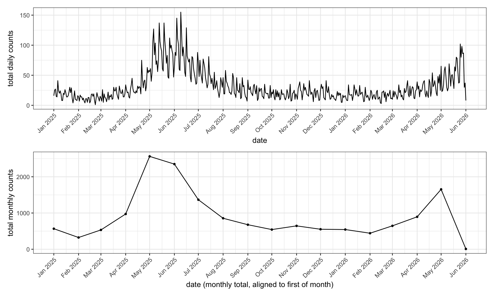
Counts per province per month: since we will be building models estimating the infection counts per province per month, including the impact of the climate.
# Counts per province per month -------------------------------------------
counts_prov_month <- df |>
count(month, province_en, name = "Count") |>
arrange(month, province_en)
# Keep provinces with more than 12 months of reported cases
selected_provinces <- counts_prov_month |>
add_count(province_en, name = "n_months") |>
filter(n_months > 12) |>
distinct(province_en) |>
pull(province_en)
cat("Selected provinces:", length(selected_provinces), "\n")
# Facet titles: how many of the possible months each province reports ---------
n_possible <- n_distinct(counts_prov_month$month) # total months in the data (18)
prov_counts <- counts_prov_month |>
filter(province_en %in% selected_provinces) |>
group_by(province_en) |>
summarise(n_months = n_distinct(month), .groups = "drop")
prov_lab <- prov_counts |>
transmute(
province_en,
label = paste0(province_en, " (", n_months, "/", n_possible, ")")
) |>
tibble::deframe()
counts_prov_month |>
filter(province_en %in% selected_provinces) |>
ggplot(aes(month, Count)) +
geom_line() + geom_point(size = 0.6) +
facet_wrap(~ province_en, scales = "free_y",
labeller = labeller(province_en = prov_lab)) +
labs(x = "date", y = "monthly count") +
theme_bw() +
theme(axis.text.x = element_text(angle = 20, hjust = 1))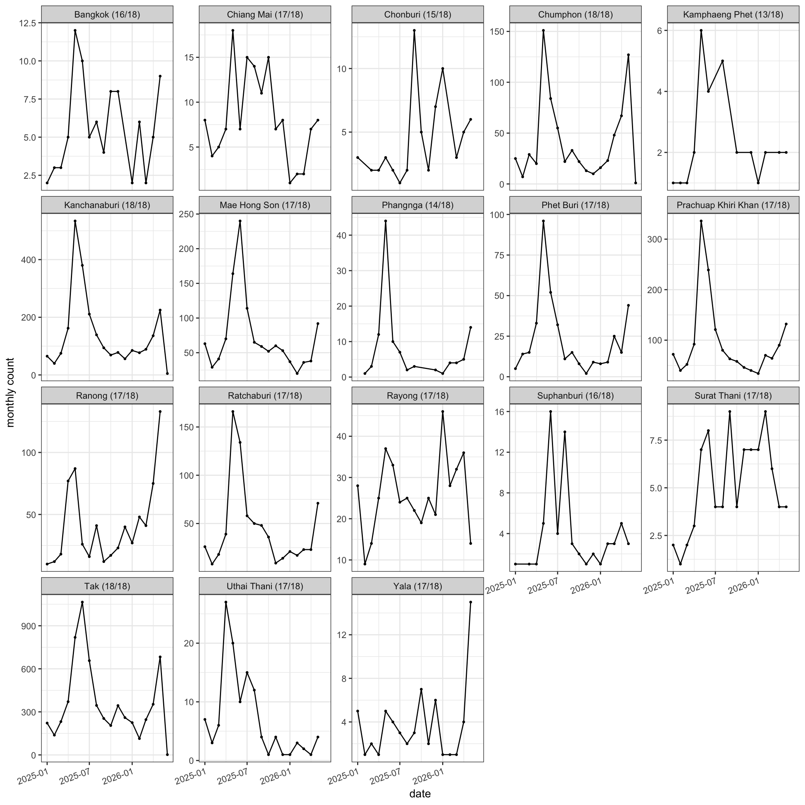
Selected provinces: 18 2.3 Look at the per-province panels. Describe the seasonal pattern you see. Do all provinces peak at the same time of year? What might explain differences between provinces?
Most provinces show a seasonal rise and fall, but not all peak in the same month; malaria seasonality depends on local climate, elevation, land use, and the timing of the rains, which differ across the country. Border provinces and forested provinces often behave differently from central ones.
The natural next question is whether we could work at a finer spatial scale.
# Counts per district per month (finer spatial scale) ---------------------
counts_dist_month <- df |>
count(month, district_en, name = "Count")
# Would a finer (district) scale work?
n_months_total <- n_distinct(df$month) # 18 possible months
dist_months <- counts_dist_month |>
group_by(district_en) |>
summarise(n_months = n_distinct(month), .groups = "drop")
cat("Districts in total:", nrow(dist_months), "\n")
cat("Districts with >12 months of reported cases:",
sum(dist_months$n_months > 12), "\n")
cat("Provinces with >12 months (from above):", length(selected_provinces), "\n")
# Share of all reported cases falling in the qualifying districts vs provinces
ok_dist <- dist_months |>
filter(n_months > 12) |>
pull(district_en)
cat(sprintf("The %d qualifying districts hold %.1f%% of all reported cases\n",
length(ok_dist), 100 * mean(df$district_en %in% ok_dist)))
cat(sprintf("The %d qualifying provinces hold %.1f%% of all reported cases\n",
length(selected_provinces), 100 * mean(df$province_en %in% selected_provinces)))
# Months of reported cases per province and per district
prov_months <- counts_prov_month |>
group_by(province_en) |>
summarise(n_months = n_distinct(month), .groups = "drop")
months_bar <- function(d, unit_label) {
ggplot(d, aes(n_months)) +
geom_bar(fill = "steelblue") +
geom_vline(xintercept = 12.5, linetype = "dashed", colour = "red") +
scale_x_continuous(
breaks = seq_len(n_months_total),
limits = c(0.5, n_months_total + 0.5)
) +
labs(y = paste0("number of ", unit_label)) +
theme_bw()
}
p_prov_freq <- months_bar(prov_months, "provinces") +
labs(x = NULL, title = "Provinces by number of months with reported cases")
p_dist_freq <- months_bar(dist_months, "districts") +
labs(x = paste0("months with reported cases (out of ", n_months_total, ")"),
title = "Districts by number of months with reported cases")
print(p_prov_freq / p_dist_freq)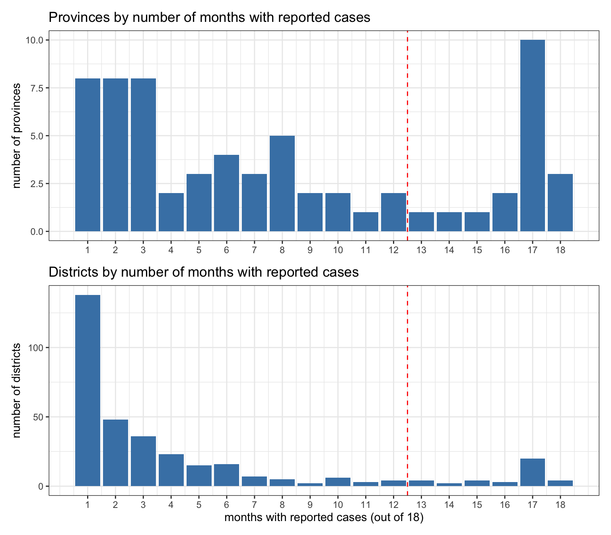
Districts in total: 340
Districts with >12 months of reported cases: 37
Provinces with >12 months (from above): 18
The 37 qualifying districts hold 90.8% of all reported cases
The 18 qualifying provinces hold 97.5% of all reported cases2.1 How many provinces are reported in the surveillance data, and how many are kept after the “more than 12 months” filter? Why might we want to restrict to provinces with a longer record before trying to relate cases to climate?
There are many provinces in the raw data, but only those reported in more than 12 months are kept (18 provinces kept out of 66), and of those only the ones whose names match the boundary shapefile are carried forward. Restricting to provinces with a longer record means each province has enough months to show a seasonal signal and to standardise sensibly; provinces with only a handful of reported months cannot support a climate–seasonality analysis.
Core question for the 90-minute run; pause here. The other Part 2 questions are for self-study.
2.2 Why analyse at the province scale? What do we gain and lose by treating the province as the spatial unit, and what would push you to a finer or coarser scale?
The spatial unit is a trade-off between signal and sparsity, and the case counts sharpen it. Going finer would likely work, with 90.8% of the malaria data still included. But visualising the 37 districts that clear the “>12 months” rule vs the 18 provinces is more difficult. It would also spread almost the same case burden across roughly twice as many units (37 districts versus 18 provinces), so each unit’s monthly counts are smaller and noisier, and 303 of the 340 districts are too sparse to use at all. The province scale captures nearly all cases (97.5%) in the fewest robust units, and so it is a pragmatic choice. Going finer would suit a focused analysis of the high-burden districts; going coarser (national) would give complete series but average over very different climates and malaria regimes, likely washing out the signal.
Part 3: Environmental variables (reanalysis)
The concept to focus on here is the spatial mismatch: climate comes on a regular grid, cases come per province, and the two steps below bridge it.
One detail that is not obvious from the code: temperature stays in Kelvin through standardisation because a constant offset (Kelvin vs Celsius) does not change a standardised (z-scored) series, so it only matters for the plots, where we convert to °C.
Malaria is reported per province, but ERA5 climate comes on a regular grid. To link them, we summarise the grid to provinces in two steps: strict cell-centre assignment, where each grid cell is assigned to the province whose polygon contains the cell’s centre (a point-in-polygon test with sf, matching the regionmask package), and then an area-weighted average of those cells, weighting each by cos of its latitude so that cells count in proportion to their area.
First load the shape files and check that the surveillance province names match the shapefile’s ADM1_EN names. Keep only the selected provinces that are present in the boundaries. Report any that are dropped so name mismatches are visible.
library(sf)
library(terra)
# Province (ADM1) boundaries ----------------------------------------------
shape_file <- st_read(
file.path(data_dir, "shape_files",
"tha_admbnda_adm1_rtsd_20190221",
"tha_admbnda_adm1_rtsd_20190221.shp"),
quiet = TRUE
)
region_names <- shape_file$ADM1_EN
# Preview what we have loaded ---------------------------------------------
shape_file |>
slice_head(n = 5) |>
knitr::kable() # the first 5 rows as a clean table in quarto
cat("Number of provinces in shapefile:", length(region_names), "\n")
missing <- setdiff(selected_provinces, region_names)
if (length(missing))
cat("Provinces not matched in shapefile and dropped: ",
paste(missing, collapse = ", "), "\n")
selected_provinces <- intersect(selected_provinces, region_names)
cat("Provinces carried forward (matched to boundaries):",
length(selected_provinces), "\n")| Shape_Leng | Shape_Area | ADM1_EN | ADM1_TH | ADM1_PCODE | ADM1_REF | ADM1ALT1EN | ADM1ALT2EN | ADM1ALT1TH | ADM1ALT2TH | ADM0_EN | ADM0_TH | ADM0_PCODE | date | validOn | validTo | geometry |
|---|---|---|---|---|---|---|---|---|---|---|---|---|---|---|---|---|
| 3.927244 | 0.2753127 | Amnat Charoen | อำนาจเจริญ | TH37 | NA | NA | NA | NA | NA | Thailand | ประเทศไทย | TH | 2019-02-18 | 2019-02-21 | -001-11-30 | MULTIPOLYGON (((104.9598 16… |
| 1.739908 | 0.0792096 | Ang Thong | อ่างทอง | TH15 | NA | NA | NA | NA | NA | Thailand | ประเทศไทย | TH | 2019-02-18 | 2019-02-21 | -001-11-30 | MULTIPOLYGON (((100.3332 14… |
| 2.417227 | 0.1313387 | Bangkok | กรุงเทพมหานคร | TH10 | NA | NA | NA | NA | NA | Thailand | ประเทศไทย | TH | 2019-02-18 | 2019-02-21 | -001-11-30 | MULTIPOLYGON (((100.6139 13… |
| 4.414998 | 0.3407840 | Bueng Kan | บึงกาฬ | TH38 | NA | NA | NA | NA | NA | Thailand | ประเทศไทย | TH | 2019-02-18 | 2019-02-21 | -001-11-30 | MULTIPOLYGON (((103.405 18…. |
| 8.701860 | 0.8445370 | Buri Ram | บุรีรัมย์ | TH31 | NA | NA | NA | NA | NA | Thailand | ประเทศไทย | TH | 2019-02-18 | 2019-02-21 | -001-11-30 | MULTIPOLYGON (((102.9303 15… |
Number of provinces in shapefile: 77
Provinces not matched in shapefile and dropped: Chonburi, Phet Buri, Suphanburi
Provinces carried forward (matched to boundaries): 15 Next, read the ERA5 monthly reanalysis: one netCDF file per month for 2 m temperature (2t) and for total precipitation (tp), cropped to the Thailand region.
# One netCDF file per month; sorting the file paths puts them in time order.
tas_files <- sort(list.files(
file.path(data_dir, "reanalysis", "monthly-averaged", "2t"),
pattern = "\\.nc$", recursive = TRUE, full.names = TRUE))
pr_files <- sort(list.files(
file.path(data_dir, "reanalysis", "monthly-averaged", "tp"),
pattern = "\\.nc$", recursive = TRUE, full.names = TRUE))
tas_r <- rast(tas_files) # temperature, one layer per month (Kelvin)
pr_r <- rast(pr_files) # total precipitation, one layer per month (metres)
# Restrict to the Thailand region
region_ext <- ext(97, 108, 5, 22)
tas_r <- crop(tas_r, region_ext)
pr_r <- crop(pr_r, region_ext)
# Rainfall time base. ERA5 tp and CMIP flux are per-day rates; multiplying by the days
# in a month reports monthly totals. This ONE constant is the whole monthly-vs-daily
# switch: set it to 1 for daily rates. It is reused by the CMIP conversion in Part 4.
DAYS_PER_MONTH <- 30
pr_r <- pr_r * DAYS_PER_MONTH # tp: mean daily rate (m/day) -> monthly total (m/month)
# Recover the month for each layer from the filename (YYYYMMDD-...)
month_from_file <- function(f)
floor_date(as.Date(sub(".*_(\\d{8})-\\d{8}\\.nc$", "\\1", basename(f)),
format = "%Y%m%d"), "month")
clim_months <- month_from_file(tas_files)
cat("Reanalysis covers", length(clim_months), "months:",
format(min(clim_months)), "to", format(max(clim_months)), "\n")Reanalysis covers 15 months: 2025-01-01 to 2026-03-01 As a quick check that the data cover the right region, map the time-mean temperature and rainfall with the province boundaries drawn on top.
# Map of the time-mean temperature and rainfall over the region -----------
tas_mean_c <- mean(tas_r) - 273.15 # Kelvin -> Celsius for display
pr_mean <- mean(pr_r)
map_df_t <- as.data.frame(tas_mean_c, xy = TRUE) |>
rename(value = last_col())
map_df_r <- as.data.frame(pr_mean, xy = TRUE) |>
rename(value = last_col())
m_t <- ggplot(map_df_t, aes(x, y, fill = value)) +
geom_raster() +
geom_sf(data = shape_file, fill = NA, colour = "grey30",
linewidth = 0.2, inherit.aes = FALSE) +
scale_fill_steps2(low = "#2166ac", mid = "white", high = "#b2182b",
midpoint = 25, limits = c(20, 30), breaks = seq(20, 30, 1),
name = "°C", oob = scales::squish) +
coord_sf(expand = FALSE) +
labs(title = "Mean temperature", x = "lon", y = "lat") +
theme_bw()
m_r <- ggplot(map_df_r, aes(x, y, fill = value)) +
geom_raster() +
geom_sf(data = shape_file, fill = NA, colour = "grey30",
linewidth = 0.2, inherit.aes = FALSE) +
scale_fill_viridis_b(name = "m/month", option = "mako", n.breaks = 8) +
coord_sf(expand = FALSE) +
labs(title = "Mean rainfall", x = "lon", y = "lat") +
theme_bw()
print(m_t + m_r)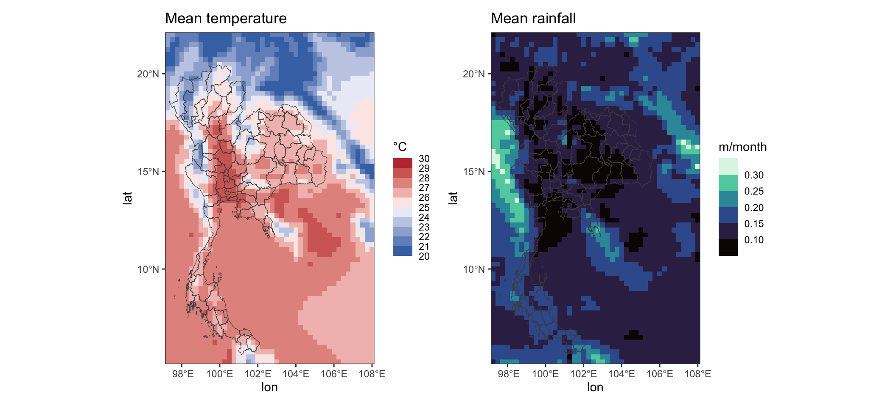
Now assign each grid cell to a province and take the area-weighted provincial mean for every month, giving one temperature and one rainfall series per province. Two checks sit side by side below: the left map confirms each grid cell landed in the right province, and the right map shows which provinces we actually carry into the model (the subset chosen in Part 2, the rest greyed out).
# Assign each grid cell to the province whose polygon contains its *centre*.
grid_xy <- terra::xyFromCell(tas_r, seq_len(terra::ncell(tas_r)))
grid_pts <- sf::st_as_sf(as.data.frame(grid_xy), coords = c("x", "y"),
crs = sf::st_crs(shape_file))
within <- sf::st_within(grid_pts, shape_file) # cell centre in polygon?
cell_region <- vapply(within,
function(h) if (length(h)) h[1] else NA_integer_,
integer(1))
# Check 1: colour each grid cell by the province it landed in.
assign_df <- tibble::tibble(
x = grid_xy[, 1],
y = grid_xy[, 2],
province_id = cell_region
)
p_assign <- assign_df |>
filter(!is.na(province_id)) |>
ggplot(aes(x, y, fill = province_id)) +
geom_raster() +
geom_sf(data = shape_file, fill = NA, colour = "grey20",
linewidth = 0.2, inherit.aes = FALSE) +
scale_fill_viridis_c(guide = "none") +
coord_sf(expand = FALSE) +
labs(title = "Grid cells coloured by assigned province", x = "lon", y = "lat") +
theme_bw()
# Check 2: which provinces are carried into the model (selected in Part 2)?
modelled_sf <- shape_file |>
mutate(
modelled = if_else(
ADM1_EN %in% selected_provinces,
"modelled",
"not modelled"
)
)
p_modelled <- ggplot(modelled_sf) +
geom_sf(aes(fill = modelled), colour = "grey40", linewidth = 0.2) +
scale_fill_manual(values = c("modelled" = "#08519c", "not modelled" = "grey88"),
name = NULL) +
coord_sf(expand = FALSE) +
labs(title = "Provinces carried into the model", x = "lon", y = "lat") +
theme_bw()
print(p_assign | p_modelled) # side by side (patchwork)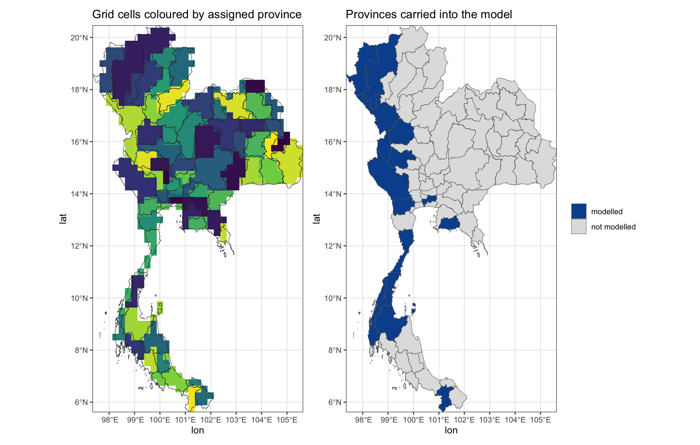
# Provincial means, area-weighted by cos(latitude); see technical note.
# The assignment and weights are reused for the CMIP data in Part 4.
cell_w <- cos(grid_xy[, 2] * pi / 180) # per-cell area weight (cos latitude)
region_means <- function(r) {
vals <- terra::values(r) # ncell x nlayer
out <- matrix(NA_real_, length(region_names), ncol(vals),
dimnames = list(region_names, NULL))
for (k in seq_along(region_names)) {
sel <- which(cell_region == k)
if (!length(sel)) next
w <- cell_w[sel]
vsel <- vals[sel, , drop = FALSE]
# Weighted mean over the NON-NA cells: normalise by the weights actually used, so a
# layer that is all NA gives NA (not 0). Matches xarray's weighted().mean(skipna);
# it matters for CMIP, where some models are missing (NA) in the final months.
out[k, ] <- colSums(vsel * w, na.rm = TRUE) / colSums((!is.na(vsel)) * w)
}
out
}
tas_prov <- region_means(tas_r)
pr_prov <- region_means(pr_r)
# Tidy into long tables, keeping only the selected provinces
to_long <- function(mat, value_name) {
m <- as.matrix(mat)
rownames(m) <- region_names
colnames(m) <- as.character(clim_months)
as.data.frame(m) |>
tibble::rownames_to_column("province_en") |>
pivot_longer(-province_en, names_to = "month", values_to = value_name) |>
mutate(month = as.Date(month))
}
clim_long <- to_long(tas_prov, "temp_k") |>
left_join(to_long(pr_prov, "rain_m"), by = c("province_en", "month")) |>
mutate(temp_c = temp_k - 273.15) |>
filter(province_en %in% selected_provinces)
clim_long |>
slice_head(n = 6) |>
knitr::kable()| province_en | month | temp_k | rain_m | temp_c |
|---|---|---|---|---|
| Bangkok | 2025-01-01 | 297.9421 | 0.0002610 | 24.79208 |
| Bangkok | 2025-02-01 | 300.9738 | 0.0401197 | 27.82382 |
| Bangkok | 2025-03-01 | 302.6852 | 0.0368993 | 29.53518 |
| Bangkok | 2025-04-01 | 303.7178 | 0.0753980 | 30.56782 |
| Bangkok | 2025-05-01 | 302.7252 | 0.2185015 | 29.57521 |
| Bangkok | 2025-06-01 | 303.1049 | 0.1008163 | 29.95489 |
A grid cell’s area is its north-south height times its east-west width. On a regular grid the height is the same for every cell (a fixed step in latitude is a fixed distance \(R\,\Delta\theta\) along the surface), so all the variation is in the width. The width shrinks towards the poles, because the meridians (lines of longitude) converge: at latitude \(\theta\) the circle of latitude has radius \(R\cos\theta\), not the full \(R\).
Why \(R\cos\theta\)? In the cross-section above, the line from the centre out to \(P\) is a radius of the sphere, so it has length \(R\), exactly like the equator’s radius. Because the equator and the \(R\cos\theta\) segment are parallel, the angle at \(P\) equals the latitude \(\theta\) (right angle marked where \(R\cos\theta\) meets the axis), so in that right triangle \(R\cos\theta\) is the side adjacent to \(\theta\). A fixed longitude span \(\Delta\lambda\) therefore covers an east-west distance \(R\cos\theta\,\Delta\lambda\).
Now take a whole cell, bounded by latitudes \(\theta_1\) and \(\theta_2\) and a longitude span \(\Delta\lambda\):
The cell is not one rectangle: its width \(R\cos\theta\,\Delta\lambda\) keeps shrinking from \(\theta_1\) up to \(\theta_2\). So slice it into thin strips of latitude. A strip at latitude \(\theta\) has width \(R\cos\theta\,\Delta\lambda\) and height \(R\,d\theta\), so area \(R^2\,\Delta\lambda\,\cos\theta\,d\theta\). Adding the strips from \(\theta_1\) to \(\theta_2\) (a sum that calculus writes as \(\int\cos\theta\,d\theta\)) gives the cell’s exact area
\[A = R^2\,\Delta\lambda\,\bigl(\sin\theta_2 - \sin\theta_1\bigr),\]
For a cell of height \(\Delta\theta\) centred at \(\theta\), the identity \(\sin\!\left(\theta+\tfrac{\Delta\theta}{2}\right) - \sin\!\left(\theta-\tfrac{\Delta\theta}{2}\right) = 2\cos\theta\,\sin\!\left(\tfrac{\Delta\theta}{2}\right)\) turns this into
\[A = R^2\,\Delta\lambda \,\cdot\, 2\sin\!\left(\tfrac{\Delta\theta}{2}\right) \,\cdot\, \cos\theta.\]
Every factor except \(\cos\theta\) is identical for all cells on a regular grid, and constant factors cancel in a normalised weighted mean. So weighting each cell by \(\cos\) of its centre latitude reproduces the true area weighting exactly: it is not a small-angle approximation, it is exact for a sphere. (The Earth’s slight oblateness shifts cell areas by a fraction of a percent, far below anything that matters at this provincial scale.)
Core question for the 90-minute run; pause here. The other Part 3 questions are for self-study.
3.1 We reduced each province’s climate to a single monthly average. What might that miss, and when might it matter?
Averaging to a province discards all within-province spatial variation: elevation gradients, forest edges, urban vs rural. For a large or topographically varied province, a single average may not represent the conditions where transmission actually happens (often specific ecological niches), so the link to cases is weakened. It further assumes average temperature is what is important, whereas minimums or maximums may drive the mosquito population changes.
Plot the resulting monthly temperature and rainfall series for each selected province.
print(ggplot(clim_long, aes(month, temp_c)) +
geom_line() + geom_point(size = 0.5) +
facet_wrap(~ province_en, scales = "free_y") +
labs(x = "date", y = "monthly mean temperature (°C)") +
theme_bw() +
theme(axis.text.x = element_text(angle = 20, hjust = 1)))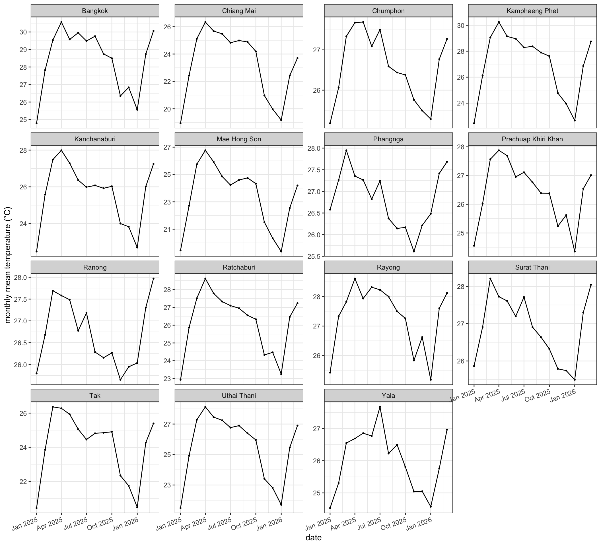
print(ggplot(clim_long, aes(month, rain_m)) +
geom_line() + geom_point(size = 0.5) +
facet_wrap(~ province_en, scales = "free_y") +
labs(x = "date", y = "monthly rainfall (m/month)") +
theme_bw() +
theme(axis.text.x = element_text(angle = 20, hjust = 1)))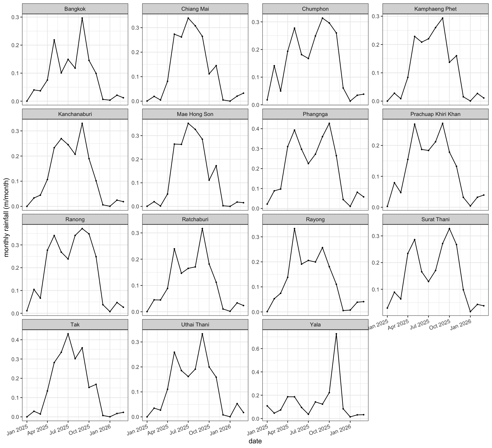
3.2 Look at the per-province temperature series. What kinds of variation do you see, and which do you think will matter most for explaining malaria seasonality?
Typically the within-year (seasonal) temperature swing within a province is modest compared with, say, rainfall seasonality, and provinces differ from each other too. Both the seasonal cycle and the between-province contrasts carry information; the panel model in Part 5 uses both by standardising within province and pooling across provinces. This is where checking maximum and minimum temperature variations would be informative, and may help you decide which to carry forward.
3.3 The reanalysis only covers a couple of years here. What are the risks of learning a climate–malaria relationship from such a short record?
A short record risks fitting to year-specific anomalies (an unusual season, a one-off outbreak) rather than a stable climate–malaria relationship, and gives very little power to separate climate effects from other drivers. Projections built on such a fit should be treated as illustrative.
Part 4: Future climate projections (CMIP6)
This part summarises the CMIP6 multi-model ensemble to the same provinces, under two scenarios. The key ideas for participants:
CMIP6 is an ensemble of many climate models; we summarise across models with a mean and an interquartile band, rather than trusting any single model.
the two scenarios (SSP1-2.6 low emissions, SSP5-8.5 high emissions) bracket a range of plausible futures. It is the heaviest step in the document; on a slow machine give it a minute, and note that
freeze: autocaches it afterwards.
The learned relationship (Part 5) is only useful if we can apply it to the future. CMIP6 provides projections of climatic variables from many climate models, under different emissions scenarios.
We have curated the required data for you already, and trimmed the data to only over the region required for this tutorial. We once again focus on the same two we’ve now learned the relationship between malaria cases for: temperature (tas) and precipitation (pr). We summarise them to the same provinces, under two scenarios: SSP1-2.6 (low emissions) and SSP5-8.5 (high emissions).
The read_cmip_var() helper below is plumbing for reading netCDF files. You can treat it as a black box: it says “give me this variable as an array, together with its longitude, latitude, dates, and model list.” You do not need to follow the netCDF details to use what it returns.
library(ncdf4)
# get common models across all scenarios and all variables
cmip_dir <- file.path(data_dir, "cmip6", "monthly-averaged")
cmip_files <- list(
ssp126_tas = "cmip6_regrided_model_ensemble.Thai_region.ssp126.tas.nc",
ssp585_tas = "cmip6_regrided_model_ensemble.Thai_region.ssp585.tas.nc",
ssp126_pr = "cmip6_regrided_model_ensemble.Thai_region.ssp126.pr.nc",
ssp585_pr = "cmip6_regrided_model_ensemble.Thai_region.ssp585.pr.nc"
)
# Read one CMIP variable; dimensions are read by name so storage order does not matter.
read_cmip_var <- function(path, var, from_date = NULL) {
nc <- nc_open(path)
on.exit(nc_close(nc))
lon <- ncvar_get(nc, "lon")
lat <- ncvar_get(nc, "lat")
tim <- ncvar_get(nc, "time")
models <- ncvar_get(nc, "model")
# time units -> dates S
tunits <- ncatt_get(nc, "time", "units")$value
origin <- as.Date(sub(".*since ", "", tunits))
dates <- floor_date(origin + tim, "month")
arr <- ncvar_get(nc, var) # dims in file order
dn <- vapply(nc$var[[var]]$dim, function(d) d$name, character(1))
# reorder to lon, lat, time, model
perm <- match(c("lon", "lat", "time", "model"), dn)
arr <- aperm(arr, perm)
# Trim to the reanalysis start so the fit and projection share a start month.
if (!is.null(from_date)) {
keep <- dates >= from_date
arr <- arr[, , keep, , drop = FALSE]
dates <- dates[keep]
}
list(arr = arr, lon = lon, lat = lat, dates = dates, models = models)
}
cmip_start <- min(clim_months) # reanalysis start month
tas126 <- read_cmip_var(file.path(cmip_dir, cmip_files$ssp126_tas), "tas", cmip_start)
cat("CMIP6 grid:", length(tas126$lon), "lon x", length(tas126$lat), "lat;",
length(tas126$models), "models;", length(tas126$dates), "months\n")CMIP6 grid: 12 lon x 19 lat; 45 models; 912 monthsThe next chunk defines the helpers that place each CMIP model on the reanalysis grid and average it to provinces, keeping every model (used later for the projection spread) alongside an ensemble summary.
# Precipitation flux (kg m^-2 s^-1) -> monthly-total depth (m): seconds per day (86400)
# x days per month (DAYS_PER_MONTH, defined in Part 3) / water density (1000 kg m^-3).
# The monthly-vs-daily switch lives entirely in DAYS_PER_MONTH; this line just uses it.
PR_FLUX_TO_M <- 86400 * DAYS_PER_MONTH / 1000
ref_grid <- tas_r[[1]] # reanalysis grid (already cropped to region)
# Build a north-up, multi-layer SpatRaster from one model's [lon, lat, time] slice
# (lon/lat treated as cell centres, so the extent is padded half a cell each side).
slice_to_rast <- function(slc, lon, lat, ref) {
lon_o <- order(lon)
lat_o <- order(lat) # index ascending
slc <- slc[lon_o, lat_o, , drop = FALSE] # lon asc, lat asc
a <- aperm(slc, c(2, 1, 3)) # -> lat x lon x time
a <- a[dim(a)[1]:1, , , drop = FALSE] # flip: north (max lat) = row 1
r <- rast(a) # 3rd dim -> layers
lo <- sort(lon)
la <- sort(lat)
dx <- mean(diff(lo))
dy <- mean(diff(la))
ext(r) <- c(min(lo) - dx/2, max(lo) + dx/2,
min(la) - dy/2, max(la) + dy/2)
crs(r) <- crs(ref) # match the reanalysis grid
r
}
# Every model -> provincial means, keeping the per-model detail (province x month x
# model) that the Part 6 projection needs for the spread.
cmip_provincial_bymodel <- function(cv, var, ref, provinces) {
nm <- length(cv$models)
# CMIP_MODEL_CAP env var caps the number of models (a faster/debug run); 0 = all.
cap <- suppressWarnings(as.integer(Sys.getenv("CMIP_MODEL_CAP", "")))
if (!is.na(cap) && cap > 0) nm <- min(nm, cap)
out <- vector("list", nm)
for (m in seq_len(nm)) {
slc <- cv$arr[, , , m] # lon x lat x time
r <- slice_to_rast(slc, cv$lon, cv$lat, ref)
names(r) <- as.character(cv$dates)
if (var == "pr") r <- r * PR_FLUX_TO_M # flux -> depth (m); see PR_FLUX_TO_M above
else r <- r - 273.15 # Kelvin -> Celsius
r <- resample(r, ref, method = "bilinear") # interpolate onto reanalysis grid
pm <- region_means(r) # strict cell-centre assignment (as Part 3)
out[[m]] <- pm[provinces, , drop = FALSE]
}
arr3 <- simplify2array(out) # province x month x model
list(arr = arr3, dates = cv$dates, provinces = provinces)
}
# Ensemble summary (mean + interquartile band) from a per-model array.
summarise_cmip <- function(bm, scenario, var) {
arr3 <- bm$arr
nt <- length(bm$dates)
qf <- function(p) as.vector(apply(arr3, c(1, 2), quantile, probs = p, na.rm = TRUE))
tibble::tibble(
province_en = rep(bm$provinces, times = nt),
month = rep(bm$dates, each = length(bm$provinces)),
scenario = scenario, variable = var,
mean = as.vector(apply(arr3, c(1, 2), mean, na.rm = TRUE)),
q05 = qf(0.05), q25 = qf(0.25), q75 = qf(0.75), q95 = qf(0.95)
)
}Now apply those helpers to all four files (two variables and two scenarios), restrict to the models the files share, and build the ensemble summary for plotting.
tas585 <- read_cmip_var(file.path(cmip_dir, cmip_files$ssp585_tas), "tas", cmip_start)
pr126 <- read_cmip_var(file.path(cmip_dir, cmip_files$ssp126_pr), "pr", cmip_start)
pr585 <- read_cmip_var(file.path(cmip_dir, cmip_files$ssp585_pr), "pr", cmip_start)
# Restrict all four files to their common models, in the same order (the projection
# pairs temperature and rainfall model-by-model).
common_models <- sort(Reduce(intersect,
list(tas126$models, tas585$models, pr126$models, pr585$models)))
align_models <- function(cv) {
idx <- match(common_models, cv$models)
cv$arr <- cv$arr[, , , idx, drop = FALSE]
cv$models <- common_models
cv
}
tas126 <- align_models(tas126)
tas585 <- align_models(tas585)
pr126 <- align_models(pr126)
pr585 <- align_models(pr585)
cat("CMIP models in common across all four files:", length(common_models), "\n")
# Per-model provincial climate (kept for the Part 6 projection)
cmip_tas <- list(
"SSP1-2.6" = cmip_provincial_bymodel(tas126, "tas", ref_grid, selected_provinces),
"SSP5-8.5" = cmip_provincial_bymodel(tas585, "tas", ref_grid, selected_provinces))
cmip_pr <- list(
"SSP1-2.6" = cmip_provincial_bymodel(pr126, "pr", ref_grid, selected_provinces),
"SSP5-8.5" = cmip_provincial_bymodel(pr585, "pr", ref_grid, selected_provinces))
# Ensemble summary for plotting
cmip_summary <- bind_rows(
summarise_cmip(cmip_tas[["SSP1-2.6"]], "SSP1-2.6", "tas"),
summarise_cmip(cmip_tas[["SSP5-8.5"]], "SSP5-8.5", "tas"),
summarise_cmip(cmip_pr[["SSP1-2.6"]], "SSP1-2.6", "pr"),
summarise_cmip(cmip_pr[["SSP5-8.5"]], "SSP5-8.5", "pr")
)CMIP models in common across all four files: 41 As a spatial check, map the model-and-time-mean temperature and rainfall over the region for each scenario, for 2025-2100.
# Model-and-time mean CMIP field on the reanalysis grid, for one scenario/variable.
cmip_mean_grid <- function(cv, var) {
fld <- apply(cv$arr, c(1, 2), mean, na.rm = TRUE) # lon x lat: mean over time and model
r <- slice_to_rast(array(fld, c(dim(fld), 1)), cv$lon, cv$lat, ref_grid)
if (var == "pr") r <- r * PR_FLUX_TO_M else r <- r - 273.15
resample(r, ref_grid, method = "bilinear")
}
cmip_map <- function(r, title, fill_scale) {
d <- as.data.frame(r, xy = TRUE) |>
rename(value = last_col())
ggplot(d, aes(x, y, fill = value)) +
geom_raster() +
geom_sf(data = shape_file, fill = NA, colour = "grey30",
linewidth = 0.2, inherit.aes = FALSE) +
fill_scale +
coord_sf(expand = FALSE) +
labs(title = title, x = "lon", y = "lat") +
theme_bw()
}
# Banded scales: blue-white-red for temperature,mako for rainfall. Rain limits
# are the Part 4 daily values x DAYS_PER_MONTH (monthly totals).
temp_scale <- function() scale_fill_steps2(low = "#2166ac", mid = "white",
high = "#b2182b", midpoint = 25, limits = c(20, 30), breaks = seq(20, 30, 1),
name = "°C", oob = scales::squish)
rain_scale <- function() scale_fill_viridis_b(name = "m/month", option = "mako",
limits = c(0.0036, 0.0084) * DAYS_PER_MONTH,
breaks = seq(0.0036, 0.0084, 0.0006) * DAYS_PER_MONTH, oob = scales::squish)
t126 <- cmip_map(cmip_mean_grid(tas126, "tas"), "Mean temperature (SSP1-2.6)", temp_scale())
t585 <- cmip_map(cmip_mean_grid(tas585, "tas"), "Mean temperature (SSP5-8.5)", temp_scale())
r126 <- cmip_map(cmip_mean_grid(pr126, "pr"), "Mean rainfall (SSP1-2.6)", rain_scale())
r585 <- cmip_map(cmip_mean_grid(pr585, "pr"), "Mean rainfall (SSP5-8.5)", rain_scale())
print((t126 + t585) / (r126 + r585))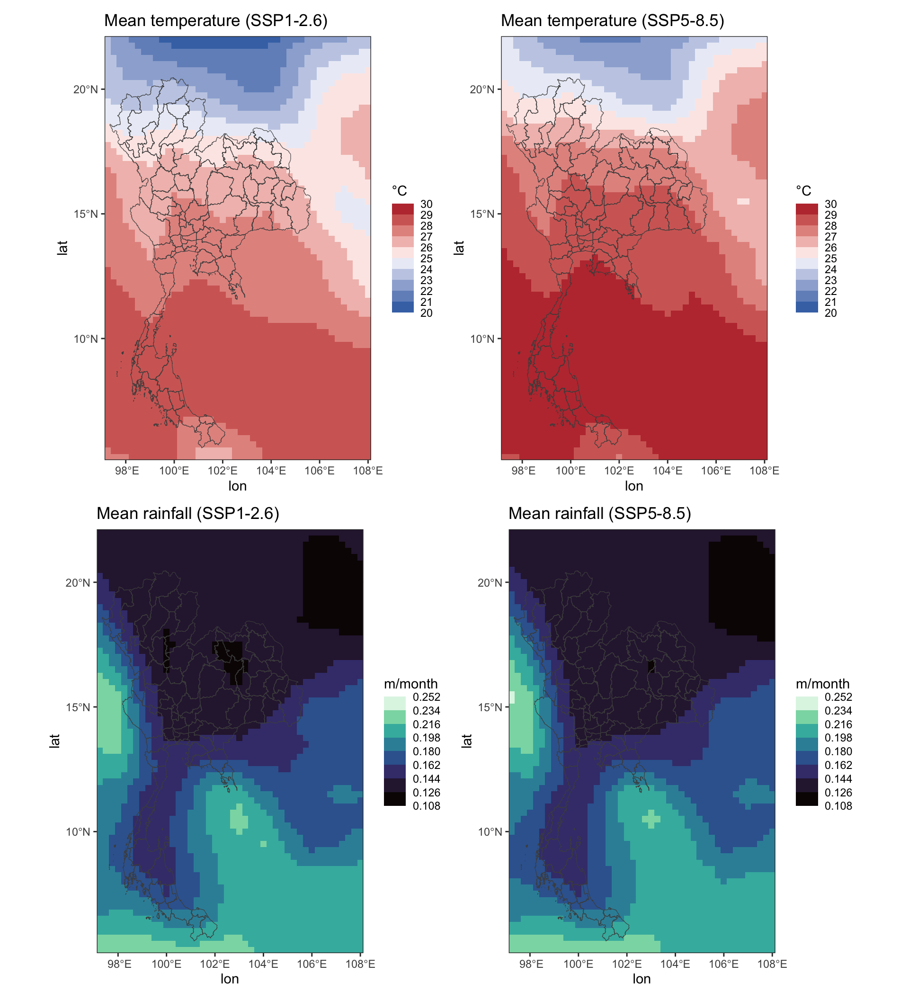
For one example province, plot the CMIP6 climate two ways: the monthly model-mean series, and the annual series showing the ensemble mean, a single model, and the interquartile range across models.
example_province <- selected_provinces[1]
prov_idx <- match(example_province, selected_provinces)
one_model <- min(21L, dim(cmip_tas[["SSP1-2.6"]]$arr)[3]) # one member, to contrast with the ensemble
lab <- c(tas = "temperature (°C)", pr = "total precipitation (m/month)")
cols <- c("SSP1-2.6" = "#2166ac", "SSP5-8.5" = "#b2182b")
# Monthly model-mean, from the ensemble summary
monthly <- cmip_summary |>
filter(province_en == example_province)
print(ggplot(monthly, aes(month, mean, colour = scenario)) +
geom_line(linewidth = 0.4) +
facet_wrap(~ variable, ncol = 1, scales = "free_y", labeller = labeller(variable = lab)) +
scale_colour_manual(values = cols) +
labs(x = "date", y = NULL,
title = paste0("CMIP6 monthly model-mean for ", example_province)) +
theme_bw())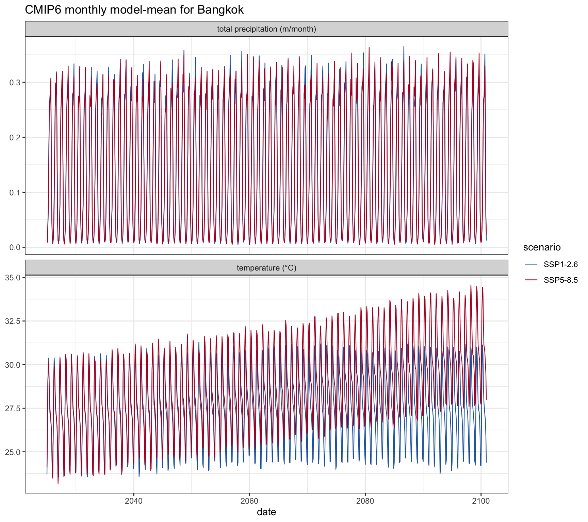
# Annual: ensemble mean, one member, and interquartile band across models
annual <- monthly |>
mutate(year = year(month)) |>
group_by(scenario, variable, year) |>
summarise(mean = mean(mean), q25 = mean(q25), q75 = mean(q75), .groups = "drop")
# one member's annual series for this province (dips into the per-model arrays)
one_annual <- bind_rows(
lapply(names(cmip_tas), function(sc) tibble::tibble(
year = year(cmip_tas[[sc]]$dates), scenario = sc, variable = "tas",
value = cmip_tas[[sc]]$arr[prov_idx, , one_model])),
lapply(names(cmip_pr), function(sc) tibble::tibble(
year = year(cmip_pr[[sc]]$dates), scenario = sc, variable = "pr",
value = cmip_pr[[sc]]$arr[prov_idx, , one_model]))
) |>
group_by(scenario, variable, year) |>
summarise(value = mean(value), .groups = "drop")
annual_lines <- bind_rows(
transmute(annual, year, scenario, variable, value = mean, series = "model mean"),
transmute(one_annual, year, scenario, variable, value, series = "one model")
)
print(ggplot() +
geom_ribbon(data = annual, aes(year, ymin = q25, ymax = q75, fill = scenario), alpha = 0.2) +
geom_line(data = annual_lines,
aes(year, value, colour = scenario, linetype = series), linewidth = 0.7) +
facet_wrap(~ variable, ncol = 1, scales = "free_y", labeller = labeller(variable = lab)) +
scale_colour_manual(values = cols) +
scale_fill_manual(values = cols, guide = "none") +
scale_linetype_manual(name = "series", values = c("model mean" = "solid", "one model" = "dashed")) +
labs(x = "year", y = NULL,
title = paste0("CMIP6 annual projections for ", example_province),
subtitle = "Solid = model mean, dashed = one model, band = interquartile range (only the middle 50% of models)") +
theme_bw())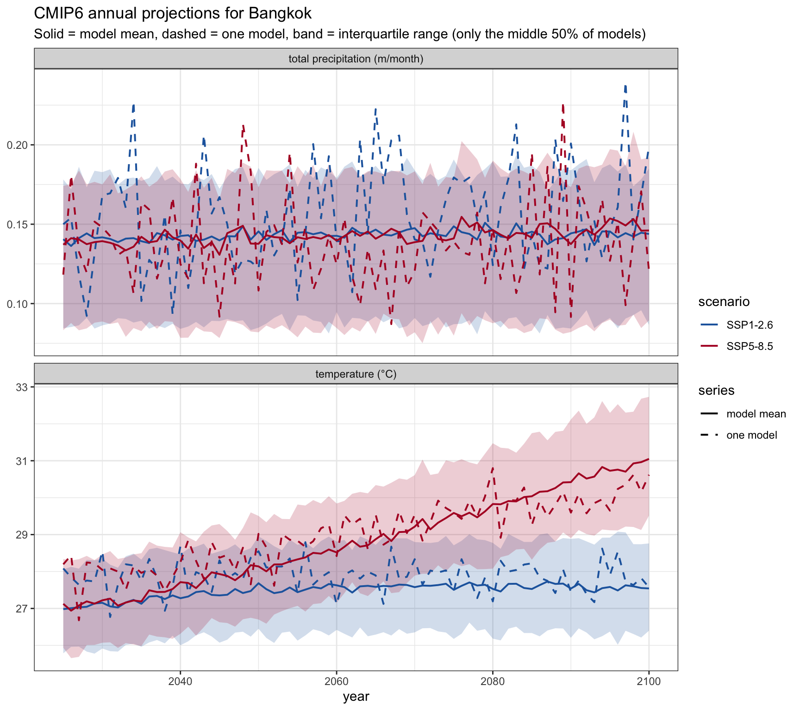
Core question for the 90-minute run; pause here. The other Part 4 questions are for self-study.
4.1 The projections are shown as a model mean with an interquartile band. Why do we show a range across models rather than picking the single “best” model?
Individual climate models disagree, especially on rainfall: note how the randomly chosen single model often exceeds the interquartile range. The ensemble mean is more reliable than any single model, and the spread is itself the honest expression of projection uncertainty. Picking one “best” model hides that uncertainty. Note also that the band in the plot above is only the interquartile range, the middle 50% of models; the full disagreement is wider. The plot below redraws the example province’s temperature with the 5-95% range as well.
ci90 <- cmip_summary |>
filter(province_en == example_province, variable == "tas") |>
mutate(year = year(month)) |>
group_by(scenario, year) |>
summarise(mean = mean(mean), q05 = mean(q05), q25 = mean(q25),
q75 = mean(q75), q95 = mean(q95), .groups = "drop")
print(ggplot(ci90, aes(year, mean, colour = scenario, fill = scenario)) +
geom_ribbon(aes(ymin = q05, ymax = q95), alpha = 0.12, colour = NA) + # 5-95% range
geom_ribbon(aes(ymin = q25, ymax = q75), alpha = 0.28, colour = NA) + # interquartile range
geom_line(linewidth = 0.8) +
scale_colour_manual(values = c("SSP1-2.6" = "#2166ac", "SSP5-8.5" = "#b2182b")) +
scale_fill_manual(values = c("SSP1-2.6" = "#2166ac", "SSP5-8.5" = "#b2182b")) +
labs(x = "year", y = "temperature (°C)",
title = paste0("Model spread in projected temperature, ", example_province),
subtitle = "Line = mean, inner band = interquartile range, outer band = 5-95% of models") +
theme_bw())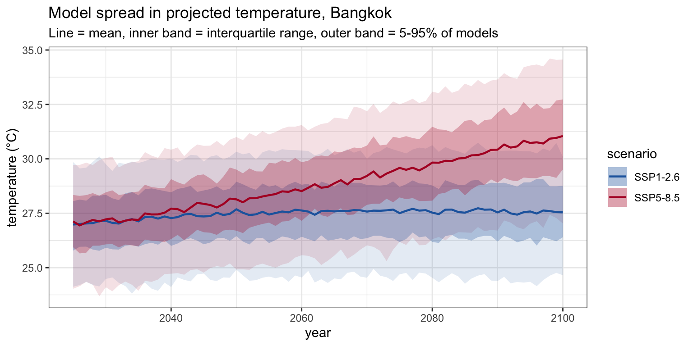
4.2 Compare the two scenarios (SSP1-2.6 and SSP5-8.5). How far apart are the temperature projections by the end of the century, and how does the model agreement on rainfall compare?
Temperature projections usually diverge clearly between the two scenarios by late century, with SSP5-8.5 substantially warmer, and models tend to agree on the direction of warming. Rainfall is far less certain: the inter-model band is usually wide and the scenarios may overlap, reflecting genuine disagreement about how precipitation will change.
4.3 We are about to feed these projections into a malaria model that was fitted on only a couple of years of reanalysis. What assumption are we making about the climate–malaria relationship when we extrapolate it decades into the future?
We are assuming the climate–malaria relationship learned over a couple of recent years holds, unchanged, decades into the future, i.e. that no adaptation, intervention, land-use change, drug resistance, or shift in the mosquito/parasite system alters it. That is a strong assumption and the main caveat on any such projection.
Part 5: Fitting climate to incidence
This is the core of the session: a statistical model relating climate to malaria cases across all provinces at once (a “panel” model).
The design choices to draw out:
we model the first difference (month-to-month change) in cases rather than the level, and we standardise per province, so that provinces of very different sizes contribute comparably.
climate enters as temperature, rainfall, and their squares, allowing a hump-shaped (optimum) response.
the fitted coefficients are shared across provinces, one climate–malaria relationship applied everywhere.
Frame it explicitly as the simplest model, one set of coefficients for the whole country.
We now link climate to cases directly with a simple statistical model that pools all provinces: a panel method, the same approach used to learn how temperature and rainfall affect the gross domestic product of the world’s economies (Burke, Hsiang & Miguel, Nature, 2015), here applied to the month-to-month change in infection count. It is deliberately the simplest model that works, one shared set of coefficients for the whole country, built up in a few steps below.
First, line up the malaria counts and the climate on the same province-by-month grid.
provinces <- selected_provinces
months <- clim_long |>
distinct(month) |>
arrange(month) |>
pull(month)
# Case matrix: provinces x months, zero-filled where no cases were reported
cases_mat <- counts_prov_month |>
filter(province_en %in% provinces) |>
complete(province_en = provinces, month = months, fill = list(Count = 0)) |>
filter(month %in% months) |>
arrange(province_en, month) |>
pivot_wider(names_from = month, values_from = Count) |>
tibble::column_to_rownames("province_en") |>
as.matrix()
cases_mat <- cases_mat[provinces, , drop = FALSE]
# Climate matrices on the same grid
mat_from_long <- function(var) {
mat <- clim_long |>
select(province_en, month, all_of(var)) |>
pivot_wider(names_from = month, values_from = all_of(var)) |>
tibble::column_to_rownames("province_en") |>
as.matrix()
mat[provinces, , drop = FALSE]
}
clim_temp <- mat_from_long("temp_k") # Kelvin (offset irrelevant once standardised)
clim_rain <- mat_from_long("rain_m")
cat("cases:", nrow(cases_mat), "provinces x", ncol(cases_mat), "months;",
"total cases =", sum(cases_mat), "\n")cases: 15 provinces x 15 months; total cases = 12829 Panel methods cannot account for trends, , as such we must first remove the trend by working with the first difference, and then standardise by the mean and standard deviation of the data in time per province.
# SD (divide by n, like NumPy's np.std), not R's sd() (n-1)
popsd <- function(x) sqrt(mean((x - mean(x))^2))
# Response: standardised first difference of cases, per province
cases_fd <- cases_mat[, -1] - cases_mat[, -ncol(cases_mat)]
fd_mean <- rowMeans(cases_fd)
fd_sd <- apply(cases_fd, 1, popsd)
z_cases_fd <- (cases_fd - fd_mean) / fd_sd
# Predictors: standardised temperature and rainfall, per province
z_temp <- (clim_temp - rowMeans(clim_temp)) / apply(clim_temp, 1, popsd)
z_rain <- (clim_rain - rowMeans(clim_rain)) / apply(clim_rain, 1, popsd)Vector Y is the standardised first difference of the counts, flattened across all provinces and months into one long vector.
Matrix X has one row per province-month, and columns for standardised temperature, temperature squared, rainfall, and rainfall squared. The squared terms are included to allow for potential nonlinear dependencies of the climate upon the infection rates.
# Flatten province x month into one vector; X columns: temp, temp^2, rain, rain^2.
Y <- as.vector(z_cases_fd)
zt <- z_temp[, -1]
zr <- z_rain[, -1]
X <- cbind(as.vector(zt), as.vector(zt)^2, as.vector(zr), as.vector(zr)^2)
colnames(X) <- c("temp", "temp^2", "rain", "rain^2")We then solve Y = X B for the coefficients B using standard ordinary least squares on the pooled data. Although one could in principle use more sophisticated elaborate methods (e.g. ridge or lasso regression).
# Centre; subtract away means of matrices
Y_mean <- mean(Y)
Y_prime <- Y - Y_mean
X_mean <- colMeans(X)
X_prime <- sweep(X, 2, X_mean)
# solve ordinary least squares problem
XtX = t(X_prime) %*% X_prime # XᵀX
XtY = t(X_prime) %*% Y_prime # XᵀY
B <- solve(XtX, XtY) # solves the linear system A B = C for B, with A = XᵀX and C = XᵀY. So it returns B = (XᵀX)⁻¹ XᵀY
# which is the closed-form OLS estimate, the coefficients that minimise the squared error ‖X B − Y‖²
print(round(setNames(as.vector(B), colnames(X)), 3)) temp temp^2 rain rain^2
0.241 0.295 0.096 -0.076 We then evaluate predictions of the change in infection cases using this regression model (the fitted B), reshape the data to be a matrix per province and per month, and then finally apply a cummulative sum to return infection counts (as opposed to changes in infection counts).
Because we model the first difference and rebuild the level by that cumulative sum, this is an ARIMA-style model, an autoregressive model with exogenous inputs (ARX), temperature and rainfall being the exogenous drivers (hence arx_fit).
# Predict the change
Y_hat <- as.vector(X_prime %*% B) + Y_mean
# reshape to province x month
z_hat <- matrix(Y_hat, nrow = nrow(z_cases_fd))
# Rescale first differences and apply cummulative sum to get back to counts
fitted_cases <- cases_mat * 0
for (i in seq_len(nrow(cases_mat))) {
fitted_cases[i, 1] <- cases_mat[i, 1]
fitted_cases[i, -1] <- fitted_cases[i, 1] +
cumsum(z_hat[i, ] * fd_sd[i] + fd_mean[i])
}Finally, we visualise the model estimates (red line) as compared to the actual data (black line).
This is perhaps the most basic model one can develop, and is design to illustrate the logic and integration of the climate data. It uses one set of coefficients to represent the behaviour across all provinces.
matrix_to_long <- function(x, series_name) {
dimnames(x) <- dimnames(cases_mat)
as.data.frame(x) |>
tibble::rownames_to_column("province_en") |>
pivot_longer(-province_en, names_to = "month", values_to = "cases") |>
mutate(month = as.Date(month), series = series_name)
}
fit_long <- bind_rows(
matrix_to_long(cases_mat, "observed"),
matrix_to_long(fitted_cases, "fitted")
)
print(ggplot(fit_long, aes(month, cases, colour = series)) +
geom_line(linewidth = 0.6) +
facet_wrap(~ province_en, scales = "free_y") +
scale_colour_manual(values = c(observed = "black", fitted = "red")) +
labs(x = "date", y = "monthly cases",
title = "Observed vs panel-fitted monthly cases") +
theme_bw() +
theme(axis.text.x = element_text(angle = 20, hjust = 1)))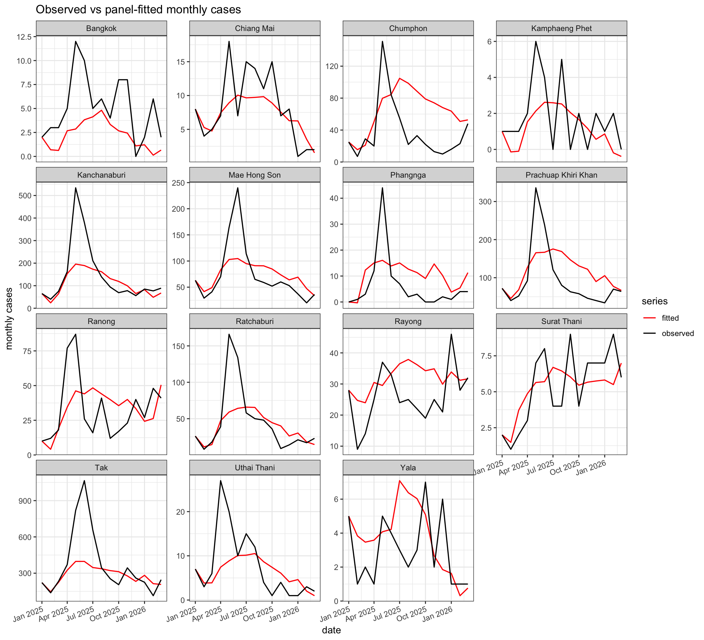
The fitted B coefficients define the climate response. In Part 6 we apply them to the future CMIP6 climate to project malaria infection cases forward. The optional SEIRS section at the end of this session fits a transmission model to the same climate parameters, an illustration of the mechanistic approach.
Temperature, temperature², rainfall and rainfall² are strongly correlated with one another, so the individual B coefficients cannot be cleanly attributed to a single driver: a large coefficient on one term can be offset by another. Treat them as a combined climate response that fits the data, not as separate causal effects. In our own climate-risk work the same collinearity (high variance-inflation factors) is why predictors are reported as candidate drivers rather than confirmed causes (Sexton et al. 2026).
5.1 What biologically reasonable relationships between temperature and rainfall and malaria might you expect? Looking back at how the climate variables enter the model, how were those relationships included here, and what might you expand upon to capture them more fully?
Biologically, we would expect the relationships to be non-monotonic rather than straight lines: mosquito survival, biting, and parasite development each have a thermal optimum, so transmission rises with temperature to a point and then falls; and both drought and flushing rains can reduce breeding, so rainfall also has an intermediate optimum. There are usually lags too, since it takes time for climate to act through the mosquito population and the parasite’s incubation. In this model those relationships were included by adding squared terms (temperature² and rainfall²) alongside the linear ones, which lets the fitted response be hump-shaped (unimodal) instead of a straight line. To capture the biology more fully you might add lagged climate terms, an interaction between temperature and rainfall, higher-order or spline terms for a more flexible shape, or move to a mechanistic model that represents the vector dynamics directly (as in the optional SEIRS section).
Core question for the 90-minute run; pause here. The other Part 5 questions are for self-study.
5.2 We standardised cases and climate per province before pooling. What would go wrong if we pooled the raw counts across provinces without standardising?
Provinces differ enormously in population and case numbers. Pooling raw counts would let a few large-caseload provinces dominate the fit, and would confound “more cases because bigger” with “more cases because of climate”. Standardising per province puts every province on a comparable footing so the shared coefficients reflect the climate relationship, not province size.
It is worth separating two things that our per-province standardisation bundles together. Dividing by population first (noting that this would require yet another data source though!), to get a per-capita incidence, is a good idea in its own right: it removes the “more cases because bigger” effect while keeping each province’s real level of incidence, which is a meaningful quantity to compare across provinces. Our z-scoring goes further and also removes each province’s mean and scale, so the fit uses only the within-province variation over time. That is what makes the coefficients comparable, but it also discards the between-province signal, so it can obscure relationships that live in the differences between provinces, for example a sparsely populated but high-incidence province whose burden is driven by climate. A reasonable alternative is to do both: convert to incidence first, then standardise, so the level information is at least available to inspect before it is removed.
5.3 Look at the observed-vs-fitted panels. Where does the model do well, and where does it do poorly? What might it be missing?
The model tends to capture the broad seasonal rise and fall but misses sharp peaks, sudden outbreaks, and province-specific idiosyncrasies. Malaria is also driven by non-climate factors: interventions (bed nets, spraying), human movement and importation, drug resistance, health-system reporting changes, none of which are in a climate-only model. By construction it also uses only within-province variation over time: standardising each province to its own mean and SD removes each province’s baseline, so the model learns how a province’s cases move with its own climate, not why one province carries a higher caseload than another, which may itself be climate-driven. That between-province spatial signal is deliberately traded away to avoid confounding climate with everything else that differs between provinces.
5.4 To project future cases, we would apply these fitted coefficients to the CMIP6 climate from Part 4. List one thing you would want to check about the future climate values before trusting such a projection.
Sensible checks include: are the future climate values within the range the model was trained on (extrapolation beyond the training range is dangerous)? Are the units and standardisation applied identically to the projections? Is the seasonal structure of the projections realistic? Does the province averaging match?
Part 6: Projecting future cases (statistical model)
Here we take the model fitted on the historical period (Part 5) and push it forward under the CMIP6 climate (Part 4) to project future cases.
Be sure to make the key caveat explicit (see the warning box). Treat the projection as illustrative, not as a forecast.
We now project the fitted model forward. For each climate model and scenario, we standardise the future CMIP6 temperature and rainfall using the historical per-province mean and standard deviation (the same scaling the model was fitted with), apply the fitted coefficients to get the predicted month-to-month change in cases, and rebuild counts by cumulative sum, seeding from the last observed month.
An illustrative case study, not a definitive projection
Rebuilding case counts by cumulatively summing predicted monthly changes over decades behaves like a random walk and will drift, so the absolute numbers far into the future should not be read literally. This is an inherent limitation of pushing a first-difference (ARX) model a long way forward, and is one reason a bounded mechanistic model (the optional SEIRS section at the end of this session) may be preferred for long-range projection. Use this to see how climate projections feed a fitted model, not as a prediction of future case counts.
Extrapolation beyond the training range
The model learned its climate response over the historical period, but future CMIP6 temperatures will exceed anything it was fitted on, so the quadratic response is being extrapolated into conditions never observed. That is a distinct source of uncertainty on top of the drift above, and one that is easy to miss because the code runs happily regardless. Formal diagnostics (for example mobility-oriented parity, or simply flagging where inputs leave the calibration range) can show which regions are being extrapolated into and treated with more caution. See, for example, (Sexton et al. 2026).
Climate is only one driver
Even a perfect climate-to-cases relationship captures just one component of malaria risk. Vector control, land use, human movement, immunity and health-system changes all matter and are held fixed here, so a projection that varies only the climate answers “how does the climate signal alone propagate”, not “how many cases will there be”.
# Historical per-province scaling (in the CMIP arrays' units). Standardising is
# offset-invariant, so this matches the scaling the model was fitted with in Part 5.
temp_mean_p <- rowMeans(clim_temp) - 273.15 # clim_temp is Kelvin; CMIP tas is °C
temp_sd_p <- apply(clim_temp, 1, popsd)
rain_mean_p <- rowMeans(clim_rain)
rain_sd_p <- apply(clim_rain, 1, popsd)
last_obs <- cases_mat[, ncol(cases_mat)] # seed the projection at the last observed month
hist_end <- max(months)
# Apply the fitted ARX model to one climate model's future climate, rebuild counts.
project_one <- function(tas_pm, pr_pm, dates) {
zt <- (tas_pm - temp_mean_p) / temp_sd_p # province x month (vectors recycle per row)
zr <- (pr_pm - rain_mean_p) / rain_sd_p
yhat <- (zt - X_mean[1]) * B[1] + # predicted standardised first-difference
(zt^2 - X_mean[2]) * B[2] +
(zr - X_mean[3]) * B[3] +
(zr^2 - X_mean[4]) * B[4] + Y_mean
dcases <- yhat * fd_sd + fd_mean # back to case-change units, per province
fut <- which(dates > hist_end) # project future months only
proj <- last_obs + t(apply(dcases[, fut, drop = FALSE], 1, cumsum))
list(proj = proj, dates = dates[fut])
}
# scenario -> array (province x future-month x model), dropping unstable models
project_scenario <- function(scenario) {
tas <- cmip_tas[[scenario]]
pr <- cmip_pr[[scenario]]
nm <- dim(tas$arr)[3]
lst <- lapply(seq_len(nm), function(m)
project_one(tas$arr[, , m], pr$arr[, , m], tas$dates)$proj)
arr <- simplify2array(lst) # province x month x model
keep <- apply(arr, 3, function(x) all(is.finite(x)))
arr[, , keep, drop = FALSE]
}
fut_dates <- project_one(cmip_tas[[1]]$arr[, , 1], cmip_pr[[1]]$arr[, , 1],
cmip_tas[[1]]$dates)$dates
proj_arr <- list("SSP1-2.6" = project_scenario("SSP1-2.6"),
"SSP5-8.5" = project_scenario("SSP5-8.5"))6.1 The projection standardises the future climate using the historical mean and standard deviation, not the future data’s own. Why is that essential? What would go wrong if we standardised the future climate on itself?
The model was fitted on climate standardised by its historical mean and standard deviation, so the coefficients only make sense on that same scale. If we re-standardised the future climate on itself, we would subtract off the very warming (or drying/wetting) trend we are trying to project; every period would look “average” relative to its own era, and the projected climate signal would vanish. We must apply the historical scaling so that a genuinely hotter future shows up as a large positive standardised value.
Aggregate the projected months to annual totals per province, and plot the ensemble mean and interquartile band for each scenario.
# Turn one scenario's projection (province x month x model) into a per-province,
# per-year summary across models (mean and interquartile band), ready for ggplot.
annual_proj <- function(arr, dates, scenario) {
yr <- lubridate::year(dates) # the calendar year of each month
years <- sort(unique(yr))
years <- years[vapply(years, function(y) sum(yr == y) == 12, logical(1))] # complete (12-month) years only
# For each year, sum that year's months -> a province x model matrix (annual totals).
# sapply stacks those matrices as columns, giving a (province*model) x year matrix.
ap <- sapply(years, function(y)
apply(arr[, yr == y, , drop = FALSE], c(1, 3), sum))
# Fold that flat matrix back into a 3-D array. R fills column-major, so the fastest-
# varying index (province) comes first, then model, then year.
ap <- array(ap, dim = c(length(provinces), dim(arr)[3], length(years))) # prov x model x year
ap <- aperm(ap, c(1, 3, 2)) # reorder to prov x year x model
# Collapse across models: mean and the 25th/75th percentiles for each province-year.
# apply(ap, c(1, 2), .) keeps province & year, summarising over the model dimension;
# as.vector unrolls it province-fastest, matching the rep() pattern below.
tibble::tibble(
province_en = rep(provinces, times = length(years)), # province cycles fastest
year = rep(years, each = length(provinces)), # year repeats per province block
scenario = scenario,
mean = as.vector(apply(ap, c(1, 2), mean)), # ensemble mean line
q25 = as.vector(apply(ap, c(1, 2), quantile, 0.25)), # lower edge of the band
q75 = as.vector(apply(ap, c(1, 2), quantile, 0.75)) # upper edge of the band
)
}
# One tidy data frame with both scenarios stacked.
proj_annual <- bind_rows(
annual_proj(proj_arr[["SSP1-2.6"]], fut_dates, "SSP1-2.6"),
annual_proj(proj_arr[["SSP5-8.5"]], fut_dates, "SSP5-8.5")
)
# Historical average annual reported cases per province (mean monthly count x 12),
# a fixed reference line to compare the projection against.
obs_annual <- tibble::tibble(
province_en = provinces,
avg = rowMeans(cases_mat) * 12
)
# One small-multiple per province: the shaded band is the inter-model IQR, the line the mean.
print(ggplot(proj_annual, aes(year, mean, colour = scenario, fill = scenario)) +
geom_ribbon(aes(ymin = q25, ymax = q75), alpha = 0.2, colour = NA) + # interquartile band
geom_line(linewidth = 0.6) + # ensemble mean
geom_hline(data = obs_annual, aes(yintercept = avg), inherit.aes = FALSE,
linetype = "dashed", colour = "grey40", linewidth = 0.4) + # historical average
facet_wrap(~ province_en, scales = "free_y") + # free y so small-caseload provinces are visible
scale_colour_manual(values = c("SSP1-2.6" = "#2166ac", "SSP5-8.5" = "#b2182b")) + # blue vs red
scale_fill_manual(values = c("SSP1-2.6" = "#2166ac", "SSP5-8.5" = "#b2182b")) +
labs(x = "year", y = "projected annual cases",
title = "Projected annual cases under CMIP6 (statistical/ARX model)",
subtitle = "Ensemble mean (line) and IQR (band); dashed line is the historical average annual cases. See caveat above.") +
theme_bw() +
theme(axis.text.x = element_text(angle = 20, hjust = 1)))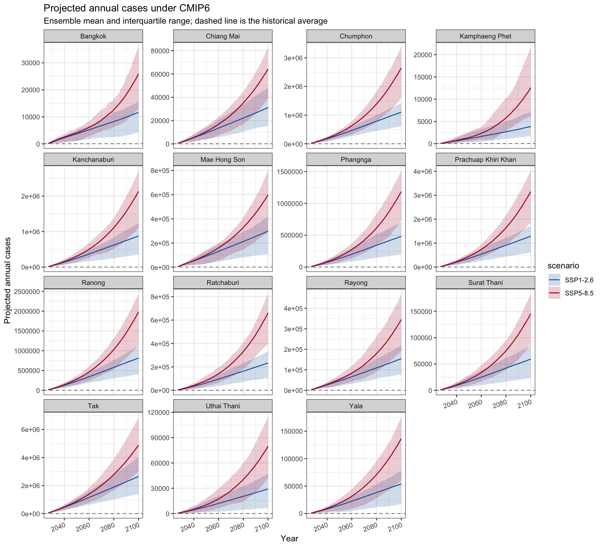
Core question for the 90-minute run; pause here. The other Part 6 questions are for self-study.
6.2 Does this projection look realistic to you? Look at the trajectories against the historical average (the dashed line, currently squashed near the bottom of each panel). Is there anything about the numbers you would want to check before believing them?
The projected counts climb far above anything in the historical record, and the free y-axis hides how far. Comparing the largest projected monthly count to the largest one ever observed makes it concrete:
vapply(proj_arr, function(a) max(a, na.rm = TRUE), numeric(1)) # largest projected monthly count, per scenario
max(cases_mat) # largest observed monthly countSSP1-2.6 SSP5-8.5
533841.5 840217.1
[1] 1065The projected numbers are orders of magnitude larger, and far into the century they can run past any plausible case count (for scale, Thailand’s entire population is about 71.7 million, World Bank). This is not a coding error: the statistical model rebuilds counts by cumulatively summing predicted monthly changes, an unbounded random walk that drifts, and it is being extrapolated into future temperatures well outside its training range. Read the shape and the gap between scenarios, not the absolute counts. The bounded SEIRS in the optional section is one way to avoid this.
6.3 Look at the projected trajectories and re-read the caveat. Which features of these plots would you trust, and which would you not? How would you describe the result honestly to a decision-maker?
Trust the direction and relative differences, e.g. that the higher- emissions scenario diverges from the lower one, and the ranking of provinces, more than the absolute case numbers, which drift because of the cumulative-sum reconstruction. Honest framing to a decision-maker: “this shows how a climate-driven statistical model responds to two emissions futures; the shape and the gap between scenarios are informative, but the absolute counts decades out are illustrative, not a forecast, and a mechanistic model would be needed for credible long-range numbers.”
The band above is the spread of model magnitudes (the interquartile range across the ensemble), which is not the same as the models agreeing. Another approach to considering the impact of the climate model variation is to determine a consensus: where do the models agree on the sign of the change? Or perhaps roughly magnitude as well. This mirrors the model-agreement maps in Sexton et al. (2026), which colour only the regions where a majority of models agree on the level and direction of change. Here we compare each province’s mean annual cases in the first decade of the projection against the last, per climate model, and map the fraction of models projecting an increase.
# Per-model change in annual cases: first projection decade vs last, per province.
model_change <- function(arr, dates, n_win = 10) {
yr <- lubridate::year(dates)
years <- sort(unique(yr))
years <- years[vapply(years, function(y) sum(yr == y) == 12, logical(1))] # complete years only
ap <- sapply(years, function(y)
apply(arr[, yr == y, , drop = FALSE], c(1, 3), sum)) # province*model collapsed per year
ap <- array(ap, dim = c(length(provinces), dim(arr)[3], length(years))) # prov x model x year
early <- rowMeans(ap[, , seq_len(n_win), drop = FALSE], dims = 2) # prov x model
late <- rowMeans(ap[, , tail(seq_along(years), n_win), drop = FALSE], dims = 2)
late - early
}
# Fraction of models projecting an increase, per province (0 = all decrease, 1 = all increase).
consensus_df <- function(arr, dates, scenario) {
chg <- model_change(arr, dates)
tibble::tibble(
ADM1_EN = provinces,
scenario = scenario,
frac_up = rowMeans(chg > 0)
)
}
consensus <- bind_rows(
consensus_df(proj_arr[["SSP1-2.6"]], fut_dates, "SSP1-2.6"),
consensus_df(proj_arr[["SSP5-8.5"]], fut_dates, "SSP5-8.5"))
# Join to the province polygons and map (grey backdrop = provinces not in the panel).
consensus_sf <- shape_file |>
select(ADM1_EN) |>
left_join(consensus, by = "ADM1_EN")
print(ggplot(consensus_sf) +
geom_sf(data = shape_file, fill = "grey95", colour = "grey80", linewidth = 0.2) +
geom_sf(aes(fill = frac_up), colour = "grey40", linewidth = 0.2) +
facet_wrap(~ scenario) +
scale_fill_gradient2(low = "#2166ac", mid = "white", high = "#b2182b",
midpoint = 0.5, limits = c(0, 1),
breaks = c(0, 0.5, 1),
labels = c("all decrease", "split", "all increase"),
name = "models projecting\nan increase") +
labs(title = "Model consensus on the direction of change in annual cases",
subtitle = paste("Fraction of CMIP6 models projecting more cases (last decade vs first). White = no consensus.",
"Read as the agreed direction, not a robust magnitude: the change still inherits the ARX drift.",
sep = "\n")) +
theme_bw() +
theme(axis.text = element_blank(), axis.ticks = element_blank()))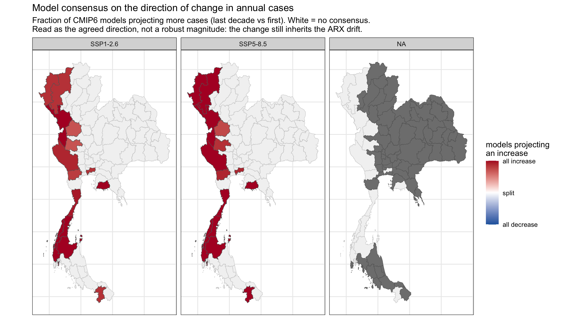
6.4 The trajectory band is the interquartile range across models; the consensus map instead shows the fraction of models agreeing on the direction of change. What does the consensus map tell you that the band does not, and why might agreement on the sign be more useful to a decision-maker than the ensemble mean?
The band mixes together models that disagree: a wide band could mean the models point in opposite directions, or that they agree on the direction but differ in magnitude. The consensus map separates those, showing where the models agree on the sign of the change. Agreement on the direction is usually more decision-relevant than the ensemble mean, because a robust “cases rise here under both scenarios” is something you can act on even when the absolute numbers are uncertain, whereas an ensemble mean can sit in the middle of a bimodal, no-consensus spread and imply a false precision. The map also shows that agreement is not spatially uniform: some provinces are far more consistent than others.
Optional: a mechanistic SEIRS alternative
This whole section is optional.
It reuses the case and climate data already built above (no re-loading), fits a compartmental transmission model, and doubles as a code base for fitting a transmission model directly.
The fit runs for maxit = 200 iterations with a relaxed convergence tolerance (factr), which settles this weakly-identified model; reduce maxit for a quicker, rougher live-demo fit.
The model in Parts 5–6 is deliberately the simplest thing that works: one shared statistical relationship between climate and the month-to-month change in malaria cases.
This takes a different, mechanistic approach: rather than regressing malaria cases on climate, it fits a compartmental SEIRS model (Susceptible → Exposed → Infected → Recovered → Susceptible) per province, sharing the disease’s natural-history parameters across all provinces but letting the transmission rate vary by province and over time: \[\begin{aligned}
\frac{dS}{dt} &= -\beta(t) S I + \omega R \\
\frac{dE}{dt} &= \beta(t) S I - \sigma E \\
\frac{dI}{dt} &= \sigma E - \gamma I \\
\frac{dR}{dt} &= \gamma I - \omega R
\end{aligned}\] where
* \(\sigma\) (1/incubation period), \(\gamma\) (1/infectious period) and \(\omega\) (1/duration of immunity) are shared across every province – these are properties of the parasite/host biology, not the location.
* \(\beta(t)\), the transmission rate, is province-specific and time-varying: \(\beta_p(t) = \beta_{0,p} \exp(b_{temp} \cdot z_{temp}(p,t) + b_{rain} \cdot z_{rain}(p,t))\), where \(z_{temp}\)/\(z_{rain}\) are standardised monthly temperature/rainfall. This is a deliberately simple proxy: malaria is mosquito-borne and mosquito abundance changs with temperature and breeding site availability (\(\approx\)rainfall), but we didn’t find mosquito data for the same time period, so climate stands in directly for the missing vector population dynamics. \(b_{temp}\) and \(b_{rain}\) are shared across provinces (one climate-sensitivityrelationship, applied everywhere); \(\beta_{0,p}\) is a free per-province baseline.
* Reported monthly cases are modelled as \(\text{cases}_p(t) \sim \text{Poisson}(\text{scale}_p \cdot y_p(t))\), where \(y_p(t) = \int_{\text{month } t} \sigma E_p(\tau)\,\mathrm{d}\tau\) is the new infections accumulated over month \(t\) (the simulation integrates \(\sigma E\) within each month and resets the accumulator at the start of each month), fit by maximum likelihood (L-BFGS-B on the negative log-likelihood, parameters in log-space to keep them positive).
7.1 Why does the transmission rate use an exponential of the climate variables, \(\beta_0\exp(b_{temp}z_{temp} + b_{rain}z_{rain})\), rather than a quadratic like the ARX model in Part 5?
Two reasons. First, \(\beta\) must stay positive; \(\exp(\cdot)\) is positive for any coefficients, whereas a bare quadratic can go negative (the ARX quadratic is fine because it acts on the standardised change in cases, which can be either sign). Second, in the ARX model the quadratic is the only source of nonlinearity, so it has to bend the response itself; the SEIRS already produces non-monotonic case dynamics from its structure (susceptible depletion, waning immunity, the incubation delay), so a simple positive, multiplicative modulation of the rate is probably enough. You could still add a temperature optimum by putting a quadratic inside the exponent (a Gaussian tolerance curve), but two coefficients is about all this short record can identify.
Treat every output as illustrative of method, not as an estimate, because:
* The climate covariates stand in for mosquito data.
* There are no population denominators used, so scale absorbs both the known human population size and the unknown case ascertainment rate.
* The data for two parasite species, Plasmodium vivax and falciparum, are pooled, even though they have different incubation periods, relapse behaviour, etc.
* Partly due to the pooling, the natural-history parameters (\(\sigma,\gamma,\omega\)) are estimated from the data rather than fixed to published vivax/falciparum biology. They are still held to a biologically plausible range by the optimiser bounds (see Step 6), but the data are what pick the value within that range, rather than the literature.
* The optimiser uses a small iteration budget so it runs quickly; it is not run to convergence.
The data. The SEIRS reuses the case matrix and per-province climate already built in Parts 2–3 and 5. The only difference is that it standardises climate globally (one shared scale) rather than per province, so that b_temp/b_rain are a single comparable climate sensitivity.
# reuse cases_mat, clim_temp (Kelvin), clim_rain (m), popsd() from Part 5
ztemp <- (clim_temp - mean(clim_temp)) / popsd(clim_temp)
zrain <- (clim_rain - mean(clim_rain)) / popsd(clim_rain)
cat(sprintf("SEIRS inputs: %d provinces x %d months, %.0f total cases\n",
nrow(cases_mat), ncol(cases_mat), sum(cases_mat)))SEIRS inputs: 15 provinces x 15 months, 12829 total casesThe model is built up in five chunks below, then fitted.
Step 1: the transmission dynamics (the ODE right-hand side). This is the SEIRS model itself: the instantaneous rate of change of each compartment. state is a 5 × n matrix, one column per province, rows S, E, I, R, and C (a running count of new infections), so everything is vectorised over provinces at once.
SUBSTEPS_PER_MONTH <- 20 # RK4 sub-steps per month
seirs_rhs <- function(state, beta, sigma, gamma, omega) {
S <- state[1, ]
E <- state[2, ]
I <- state[3, ]
R <- state[4, ]
rbind(-beta * S * I + omega * R, # dS (lose to infection, gain from waning immunity)
beta * S * I - sigma * E, # dE (newly infected, then become infectious)
sigma * E - gamma * I, # dI (become infectious, then recover)
gamma * I - omega * R, # dR (recover, then lose immunity)
sigma * E) # dC (cumulative NEW infectious -- those more likely to be detectable)
}Step 2: simulating it forward (fixed-step RK4). We integrate the ODE month by month using a fixed-step Runge–Kutta (RK4) scheme with SUBSTEPS_PER_MONTH steps per month, for all provinces simultaneously. A burn-in lets the model settle before we record anything, and we reset the accumulator C at the start of each month so that incidence holds the new infections within that month.
A proper ODE solver would be more accurate but slower.
simulate_incidence <- function(beta, sigma, gamma, omega,
i0 = 1e-4, e0 = 1e-4, burn_in_months = 12,
init_state = NULL, return_state = FALSE) {
n_prov <- nrow(beta); n_months <- ncol(beta)
dt <- 1 / SUBSTEPS_PER_MONTH
# Initial conditions. If init_state is supplied (used by the projection to continue from
# the disease state at the end of the historical fit) we start from it and skip the
# burn-in. Otherwise we start from a near-fully-susceptible population and burn in to
# settle; this default is what the fit uses and is smooth in the parameters, so the
# optimiser behaves. return_state = TRUE also returns the final state, so the fit can hand
# its end state to the projection.
if (!is.null(init_state)) {
state <- init_state
burn_in_months <- 0
} else {
state <- rbind(rep(1 - i0 - e0, n_prov), rep(e0, n_prov),
rep(i0, n_prov), rep(0, n_prov), rep(0, n_prov))
}
step <- function(state, beta_m) { # one RK4 sub-step
k1 <- seirs_rhs(state, beta_m, sigma, gamma, omega)
k2 <- seirs_rhs(state + 0.5*dt*k1, beta_m, sigma, gamma, omega)
k3 <- seirs_rhs(state + 0.5*dt*k2, beta_m, sigma, gamma, omega)
k4 <- seirs_rhs(state + dt*k3, beta_m, sigma, gamma, omega)
state + (dt/6) * (k1 + 2*k2 + 2*k3 + k4)
}
if (burn_in_months > 0) { # settle using month-1 transmission
beta0_m <- beta[, 1]
for (b in seq_len(burn_in_months)) {
for (s in seq_len(SUBSTEPS_PER_MONTH)) state <- step(state, beta0_m)
state[5, ] <- 0
}
}
incidence <- matrix(0, n_prov, n_months)
for (m in seq_len(n_months)) {
state[5, ] <- 0
beta_m <- beta[, m] # use this month's beta
for (s in seq_len(SUBSTEPS_PER_MONTH)) state <- step(state, beta_m)
incidence[, m] <- state[5, ]
state[1:4, ] <- pmin(pmax(state[1:4, ], 0), 1) # keep compartments in [0, 1]; shouldn't need this but since manually RK4, good to check
}
if (return_state) list(incidence = incidence, state = state) else incidence
}Step 3: unpacking the parameters. The optimiser works in an unconstrained, log-transformed space so that rates stay positive. This turns the flat parameter vector back into named, natural-scale quantities: the shared natural-history rates, the two climate sensitivities, and the per-province baseline transmission beta0 and reporting scale.
unpack_params <- function(params, n) {
list(sigma = exp(params[1]), gamma = exp(params[2]), omega = exp(params[3]),
b_temp = params[4], b_rain = params[5],
beta0 = exp(params[6:(5 + n)]), scale = exp(params[(6 + n):(5 + 2*n)]))
}Step 4: the likelihood. Given a parameter vector, build the climate-forced transmission rate beta_t, simulate the incidence, and score it against the observed counts with a Poisson negative log-likelihood, the quantity the optimiser minimises.
neg_log_lik <- function(params, cases, ztemp, zrain) {
n <- nrow(cases)
p <- unpack_params(params, n)
beta_t <- p$beta0 * exp(p$b_temp * ztemp + p$b_rain * zrain) # climate forces transmission
beta_t <- pmin(pmax(beta_t, 1e-6), 50)
incidence <- simulate_incidence(beta_t, p$sigma, p$gamma, p$omega)
lam <- pmax(p$scale * incidence, 1e-8) # expected reported cases
sum(lam - cases * log(lam)) # Poisson NLL, additive constant log(cases!) omitted
}Step 5: starting values. An initial guess for the optimiser: incubation ~0.5 months (includes the mosquito transmission cycle), infectious ~1 month, immunity ~6 months, no climate effect to begin with, and per-province baselines scaled to each province’s mean caseload.
default_x0 <- function(cases) {
n <- nrow(cases)
c(log(1/0.5), log(1/1.0), log(1/6.0), 0, 0, # sigma, gamma, omega, b_temp, b_rain
log(rep(2.5, n)), # beta0 (per province)
log(pmax(rowMeans(cases), 1) * 50)) # scale (per province)
}Step 6: fit. Now minimise the negative log-likelihood with a bounded optimiser (L-BFGS-B). The lower/upper vectors keep every parameter in a biologically plausible range (incubation/infectious periods between ~0.05 and 3 months, immunity between 0.5 and 36 months, the climate sensitivities within ±2). It runs for maxit = 200 iterations with a relaxed convergence tolerance (factr), which is enough for this weakly-identified model to settle; reduce maxit for a quicker, rougher live-demo fit.
n <- nrow(cases_mat)
x0 <- default_x0(cases_mat)
# Parameter order (matches unpack_params): sigma, gamma, omega, b_temp, b_rain,
# then beta0 (one per province), then scale (one per province). Rates are in log-space.
lower <- c(log(1/3.0), log(1/3.0), log(1/36.0), -2, -2, # sigma, gamma, omega, b_temp, b_rain
rep(log(0.05), n), rep(log(1.0), n)) # beta0 (per province), scale (per province)
upper <- c(log(1/0.05), log(1/0.05), log(1/0.5), 2, 2, # sigma, gamma, omega, b_temp, b_rain
rep(log(30), n), rep(log(1e9), n)) # beta0 (per province), scale (per province)
# 200 iterations with a relaxed convergence tolerance (factr): the beta0/scale ridge is
# flat, so the default tight tolerance never triggers and the fit would otherwise just run
# to the iteration cap (reporting "code 1") despite having effectively settled. ndeps
# matches SciPy's default gradient step. factr = 1e9 matches SciPy's ftol = 1e9 * eps.
fit <- optim(x0, neg_log_lik, method = "L-BFGS-B",
lower = lower, upper = upper,
cases = cases_mat, ztemp = ztemp, zrain = zrain,
control = list(maxit = 200, factr = 1e9, ndeps = rep(1e-8, length(x0))))
p <- unpack_params(fit$par, n)
cat(sprintf("convergence code=%d nll=%.1f\n", fit$convergence, fit$value)) # 0 converged; 1 did not
cat(sprintf("incubation period 1/sigma = %.2f months\n", 1/p$sigma))
cat(sprintf("infectious period 1/gamma = %.2f months\n", 1/p$gamma))
cat(sprintf("immunity duration 1/omega = %.2f months\n", 1/p$omega))
cat(sprintf("climate sensitivity b_temp = %+.3f b_rain = %+.3f\n", p$b_temp, p$b_rain))convergence code=0 nll=-52545.6
incubation period 1/sigma = 0.55 months
infectious period 1/gamma = 0.40 months
immunity duration 1/omega = 10.59 months
climate sensitivity b_temp = +0.198 b_rain = +0.163Step 7: diagnostics. A snapshot of the fitted per-province parameters, with the observed (reported) and model-fitted total cases side by side, sorted by observed caseload. R0_baseline is the baseline reproduction number \(\beta_{0}/\gamma\) (transmission rate over recovery rate, at full susceptibility).
# Fitted expected monthly cases (the Poisson mean), reused by the plot below. We also keep
# the disease state at the end of the historical period, to seed the projection (below).
beta_fit <- p$beta0 * exp(p$b_temp * ztemp + p$b_rain * zrain)
beta_fit <- pmin(pmax(beta_fit, 1e-6), 50) # same clipping as the likelihood, so the diagnostic matches the fitted model
sim_hist <- simulate_incidence(beta_fit, p$sigma, p$gamma, p$omega, return_state = TRUE)
lam_fit <- p$scale * sim_hist$incidence
fit_end_state <- sim_hist$state # S/E/I/R/C at the last historical month; the projection continues from here
# Per-province fit snapshot (mirrors the Python param_summary table).
param_summary <- tibble::tibble(
province_en = rownames(cases_mat),
beta0 = p$beta0,
R0_baseline = p$beta0 / p$gamma, # gamma is shared across provinces
scale = p$scale,
reported_cases = rowSums(cases_mat), # observed total
fitted_cases = rowSums(lam_fit) # model total (expected)
) %>% arrange(desc(reported_cases))
knitr::kable(param_summary, digits = c(NA, 3, 2, 1, 0, 0))| province_en | beta0 | R0_baseline | scale | reported_cases | fitted_cases |
|---|---|---|---|---|---|
| Tak | 12.735 | 5.07 | 6151.8 | 5497 | 5500 |
| Kanchanaburi | 11.519 | 4.58 | 2336.5 | 2154 | 2156 |
| Prachuap Khiri Khan | 10.424 | 4.15 | 1507.4 | 1407 | 1407 |
| Mae Hong Son | 13.205 | 5.25 | 1269.3 | 1103 | 1103 |
| Ratchaburi | 10.647 | 4.24 | 737.7 | 667 | 667 |
| Chumphon | 9.958 | 3.96 | 580.2 | 558 | 557 |
| Ranong | 10.944 | 4.35 | 471.1 | 495 | 494 |
| Rayong | 30.000 | 11.94 | 319.2 | 388 | 386 |
| Chiang Mai | 11.917 | 4.74 | 141.2 | 124 | 123 |
| Uthai Thani | 12.931 | 5.14 | 118.5 | 116 | 115 |
| Phangnga | 9.184 | 3.65 | 99.7 | 93 | 96 |
| Surat Thani | 6.400 | 2.55 | 105.0 | 80 | 81 |
| Bangkok | 8.998 | 3.58 | 83.7 | 76 | 77 |
| Yala | 7.417 | 2.95 | 50.5 | 44 | 42 |
| Kamphaeng Phet | 10.745 | 4.27 | 28.4 | 27 | 26 |
Continuing the diagnostics, compare the fitted incidence (lam_fit, computed above) against the observed monthly counts, province by province.
ss_res <- sum((cases_mat - lam_fit)^2)
ss_tot <- sum((cases_mat - mean(cases_mat))^2)
cat(sprintf("pseudo-R2 (vs fitted lambda): %.3f\n", 1 - ss_res / ss_tot))
diag_long <- bind_rows(
matrix_to_long(cases_mat, "observed"),
matrix_to_long(lam_fit, "fitted")
)
print(ggplot(diag_long, aes(month, cases, colour = series)) +
geom_line(linewidth = 0.6) +
facet_wrap(~ province_en, scales = "free_y") +
scale_colour_manual(values = c(observed = "black", fitted = "red")) +
labs(x = "date", y = "monthly cases",
title = "Observed vs SEIRS-fitted monthly cases") +
theme_bw() +
theme(axis.text.x = element_text(angle = 20, hjust = 1)))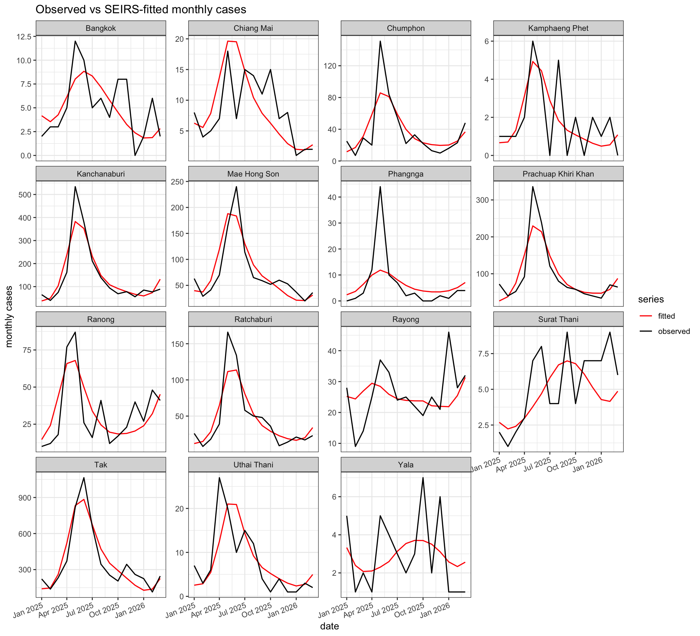
pseudo-R2 (vs fitted lambda): 0.942beta0 (baseline transmission) and scale (population × reporting rate) trade off to set the case level, so the optimiser can shuffle magnitude between them, and the natural-history rates (\(\sigma,\gamma,\omega\)) are only weakly constrained by the data.
This is very clearly shown when comparing the python and R outputs.
Step 8: Projecting forward, and model consensus. The mechanistic model can also be projected forward under CMIP6, exactly as the statistical model was in Part 6. For each climate model we continue the simulation from the disease state at the end of the historical fit and run the future months only, seeded that way so there is no artificial restart or initial-epidemic transient (this is the same idea as the Part 6 ARX projection, which continues from the last observed month). The future climate is standardised with the same global historical mean and standard deviation the model was fitted with. We plot the projected annual cases (ensemble mean and interquartile band, as in Part 6).
# Global (shared) historical scale the SEIRS was fitted with; see seirs-setup.
tmean <- mean(clim_temp) - 273.15 # historical mean in °C (CMIP tas is °C, as in Part 6); SD is offset-invariant
tsd <- popsd(clim_temp)
rmean <- mean(clim_rain) # m/month (CMIP pr already converted to m/month in Part 4)
rsd <- popsd(clim_rain)
# Project the fitted SEIRS under one climate model's future climate, continuing from the
# disease state at the end of the historical fit and projecting future months only (as the
# Part 6 ARX projection continues from the last observed month).
seirs_project_one <- function(tas_pm, pr_pm, dates) {
zt <- (tas_pm - tmean) / tsd # both in °C (see tmean above), as the Python does
zr <- (pr_pm - rmean) / rsd
beta_t <- p$beta0 * exp(p$b_temp * zt + p$b_rain * zr)
beta_t <- pmin(pmax(beta_t, 1e-6), 50) # same clipping as the likelihood
fut <- which(dates > hist_end) # future months only
p$scale * simulate_incidence(beta_t[, fut, drop = FALSE], p$sigma, p$gamma, p$omega,
init_state = fit_end_state) # seed from the fit's end state; no burn-in
}
# scenario -> province x future-month x model of projected reported cases (no dropping yet)
seirs_project_scenario <- function(scenario) {
tas <- cmip_tas[[scenario]]
pr <- cmip_pr[[scenario]]
simplify2array(lapply(seq_len(dim(tas$arr)[3]),
function(m) seirs_project_one(tas$arr[, , m], pr$arr[, , m], tas$dates)))
}
seirs_raw <- list("SSP1-2.6" = seirs_project_scenario("SSP1-2.6"),
"SSP5-8.5" = seirs_project_scenario("SSP5-8.5"))
# Drop a model if it is unstable in *either* scenario (matches the notebook), so both
# scenarios carry the same model set. cmip_tas/cmip_pr share model order across scenarios.
keep <- apply(seirs_raw[["SSP1-2.6"]], 3, function(x) all(is.finite(x))) &
apply(seirs_raw[["SSP5-8.5"]], 3, function(x) all(is.finite(x)))
seirs_arr <- lapply(seirs_raw, function(a) a[, , keep, drop = FALSE])
seirs_dates <- { d <- cmip_tas[[1]]$dates; d[d > hist_end] } # future months only
# Projected annual cases per province: ensemble mean and interquartile band (reuses annual_proj).
seirs_annual <- bind_rows(
annual_proj(seirs_arr[["SSP1-2.6"]], seirs_dates, "SSP1-2.6"),
annual_proj(seirs_arr[["SSP5-8.5"]], seirs_dates, "SSP5-8.5"))
print(ggplot(seirs_annual, aes(year, mean, colour = scenario, fill = scenario)) +
geom_ribbon(aes(ymin = q25, ymax = q75), alpha = 0.2, colour = NA) +
geom_line(linewidth = 0.6) +
geom_hline(data = obs_annual, aes(yintercept = avg), inherit.aes = FALSE,
linetype = "dashed", colour = "grey40", linewidth = 0.4) + # historical average (from Part 6)
facet_wrap(~ province_en, scales = "free_y") +
scale_colour_manual(values = c("SSP1-2.6" = "#2166ac", "SSP5-8.5" = "#b2182b")) +
scale_fill_manual(values = c("SSP1-2.6" = "#2166ac", "SSP5-8.5" = "#b2182b")) +
labs(x = "year", y = "projected annual cases",
title = "Projected annual cases under CMIP6 (SEIRS model)",
subtitle = "Ensemble mean (line) and IQR (band); dashed line is the historical average annual cases.") +
theme_bw() +
theme(axis.text.x = element_text(angle = 20, hjust = 1)))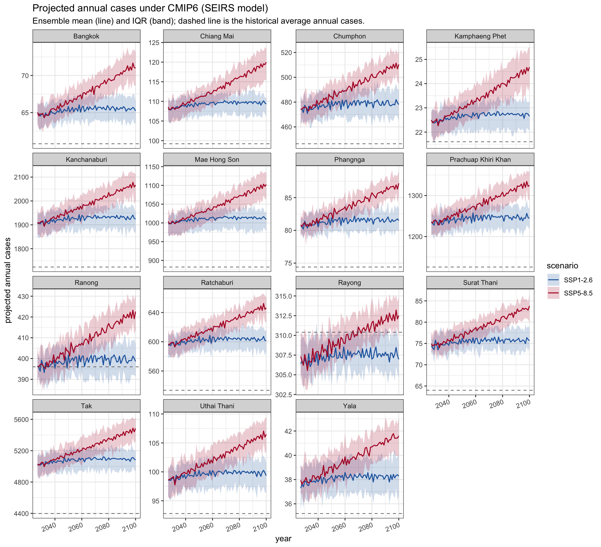
7.2 Compare with the statistical projection. Put these SEIRS trajectories next to the ARX ones in Part 6. How do the projected levels differ over the century, and what in each model’s construction explains it?
The ARX trajectories drift upward without limit (some far past any plausible case count), while the SEIRS ones stay in a realistic range and flatten or oscillate. The reason is structural. The ARX model rebuilds counts by cumulatively summing predicted monthly changes, so nothing stops the level wandering, and extrapolating its quadratic climate response into unseen future temperatures gives it a persistent drift. The SEIRS instead tracks population fractions (S + E + I + R = 1) and converts the infected fraction into cases through a fitted per-province scale, so its output is bounded by that scale (calibrated to the observed caseload), while saturation and waning immunity keep the dynamics finite. That boundedness comes from the fitted scale, not from plugging in a real population, so the SEIRS gives sensible-looking levels but not a true attack rate. For long-range projection the bounded model is the safer choice; the ARX is really illustrative only, but shows a consistent direction of change and gap between SSP scenarios.
Now we map the consensus: the fraction of models in which a province’s annual cases change in similar direction and quantity from the first to the last decade.The map reuses the helpers from Part 6.
# Reuse the Part 6 consensus helpers (model_change, consensus_df) on the SEIRS projection.
seirs_consensus <- bind_rows(
consensus_df(seirs_arr[["SSP1-2.6"]], seirs_dates, "SSP1-2.6"),
consensus_df(seirs_arr[["SSP5-8.5"]], seirs_dates, "SSP5-8.5"))
seirs_consensus_sf <- shape_file |>
select(ADM1_EN) |>
left_join(seirs_consensus, by = "ADM1_EN")
print(ggplot(seirs_consensus_sf) +
geom_sf(data = shape_file, fill = "grey95", colour = "grey80", linewidth = 0.2) +
geom_sf(aes(fill = frac_up), colour = "grey40", linewidth = 0.2) +
facet_wrap(~ scenario) +
scale_fill_gradient2(low = "#2166ac", mid = "white", high = "#b2182b",
midpoint = 0.5, limits = c(0, 1),
breaks = c(0, 0.5, 1),
labels = c("all decrease", "split", "all increase"),
name = "models projecting\nan increase") +
labs(title = "SEIRS model consensus on the direction of change in annual cases",
subtitle = "Fraction of CMIP6 models projecting more cases (last decade vs first). White = no consensus.") +
theme_bw() +
theme(axis.text = element_blank(), axis.ticks = element_blank()))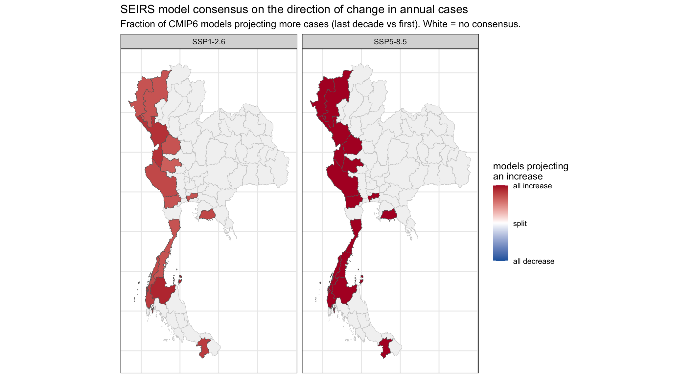
7.3 Discussion (model structure): compare this SEIRS consensus map with the statistical one in Part 6. Both are now seeded from the end of the fit and cover the future only, so they are on the same footing. Where do the two models agree on the direction of change, and where do they differ? What does any disagreement tell you about where the uncertainty comes from?
Because both models now start from the same fitted end state and run over the same future window, differences between the two maps reflect the models’ structure, not an artefact of how each projection was set up. Where the climate signal is strong it tends to dominate both models, so they agree on the direction of change and that agreement can be reported with more confidence. Where the signal is weak, the direction in each province is only lightly set by climate and is instead decided by each model’s structure, so any disagreement there is structural (model-form) uncertainty.
The two structures still differ in ways that matter. The statistical model is quadratic in temperature and rainfall, so a province sitting near the fitted optimum can fall either side of the hump with a tiny climate nudge, and it rebuilds counts by cumulatively summing predicted changes, an unbounded random walk that drifts (this is why its trajectories can grow implausibly large, even past the population). The SEIRS forces transmission monotonically and is bounded by saturation and waning immunity, so its levels stay finite.
The lesson is that there are two different uncertainties in play. The consensus map shows disagreement across climate models; the gap between the two maps shows disagreement across disease-model structure (structural or model-form uncertainty). Reporting the direction of change where the models agree, and preferring a bounded model for long-range work, is the honest way to handle both.
7.4 Discussion (SEIRS): the statistical model (Parts 5–6) and this mechanistic model both link climate to malaria. What can the mechanistic model tell you that the statistical one cannot, and vice versa?
The mechanistic SEIRS gives interpretable epidemiological quantities: a transmission rate, a baseline reproduction number, and incubation/infectious/immunity durations, which map onto biology, can be compared with the literature, and correspond to things an intervention could change. Because it represents the process (susceptible depletion, waning immunity), it captures saturation and threshold behaviour, stays bounded rather than drifting, and can answer counterfactual “what if transmission were reduced” questions the statistical model cannot. That makes it the more defensible tool for long-range projection and for reasoning about interventions.
The statistical (ARX) model, in return, commits to no mechanism, so it cannot be wrong about one: it estimates the empirical climate-to-cases association directly. It is simpler, faster, has fewer parameters to identify, and is transparent about being purely data-driven, which is a strength when the mechanism is uncertain or the goal is just to detect and quantify a climate signal. Its cost is that it offers no biological interpretation and, as Part 6 showed, extrapolates poorly. In short: the statistical model is a good description, the mechanistic model a (contestable) explanation.
7.5 Ways to improve it: the SEIRS works in population fractions and folds the true population into the fitted scale. What would you gain by bringing in actual per-province human population numbers, and what new problem appears if you need them out to 2100?
Using real per-province populations as the denominator would separate the two things scale currently confounds: population size and reporting rate. You would recover an interpretable attack rate (cases per head), the compartments would be bounded by a real number of people rather than a fitted constant, and provinces would be comparable on a genuine per-capita basis. The catch is that a projection to 2100 needs future population, not today’s, so you would have to bring in population projections (from a demographic model or a national statistics office), and those carry their own uncertainty (fertility, mortality, migration, urbanisation) that compounds with the climate-model uncertainty already in the projection. Other improvements worth listing: fixing the natural-history rates to published vivax/falciparum biology rather than fitting them, separating the two species, and adding an explicit mosquito/vector layer so climate acts through abundance rather than directly on transmission.
Contributors
- Dr Vassili Kitsios
- Prof. Roslyn Hickson
- Dr Michael Lydeamore
- Claude (Anthropic) did the porting of the existing Python workflow to R Quarto; all content checked by the course team